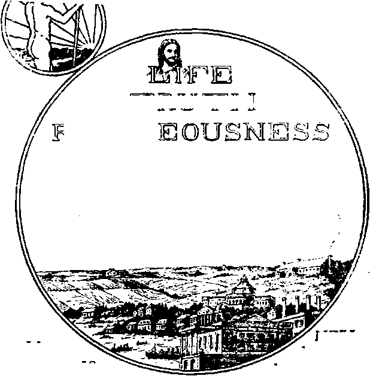
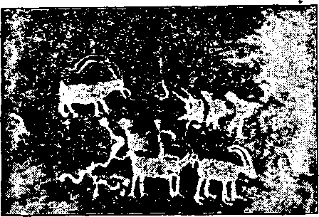

Vol. V Bi-Weekly No. 109
November 21, 1923
THE TRUTH ABOUT TOBACCO
ANTEDILUVIAN GIANT STORY CONFIRMED
LITTLE FOLKS AND THE BIBLE
Kope andL courage
TRUTH
5s" a copy — $ 100 a Year Canada and Foreign Countries $ 1.50
NEV
VORLD BEGINNING
Social and Educational
World Given to Spouts.................
Political—Domestic and Foreign
Political Items....................
Sinking of Two Battleships...............
Victor Berger and Political Prisoners...........
U ADULTERATED ROYAL GALL........ .
Science and Invention
Interrogations ....................
Is North North, or What?............. ■
Forest Fires Cause “Dark Days".............
Red-Blooded Men Always Needed.............
Bible Account of Antediluvian Giants Confirmed......
Home and Health
“The Truth about Tobacco*...............
How It Ruins the Blood ................
How It Ruins the Nerves................
How It Ruins the Brain................
How It Ruins the Boys...............
How It Ruins the Men.................
How It Ruins the Nation..... . . .
On Birth Control........ . . .
Religion and Philosophy
Methodism's Gropings and Antics.............
Spiritism Grows Apace .................
Little Folks and the Bible * ..............
Jesus* Love for Children................
The Superiority of the Bible..............
Is the Roman Chubch Weakening?............
The Dawn of the Morning (Poem)............
Pastor Russell’s First Book (Part II)........ .
Manner of Christ’s Second Coming........ .
How Will He Come Again?...............
103
104
104
105
105
106
107
108
109
110
99
99
100
100
101
101 ' '
101
114
102
104
116
117
118
119
120
121
123
126
127
Published every ether Wednesday at 18 Coneord Street, Brooklyn, N. Y^ U. 8. A^ by WOODWORTH, HEDGINGS A MARTIN
Copartners and Proprietors Addrat: 18 Concord Street, Brooklyn, K. F., U.S.A* CLAYTON J. WOODWORTH . . . Editor ROBERT J. MARTIN . Business Manor* C. E. STEWART .... Assistant Editor W F. HEDGINGS . . See’y and Treao. Five Cents a Copt—*1.00 a Year Make Remittances to THE GOLDEN AGE Foreign Offices: British.....84 Craven Terrace, Lancaster Gate, London W. 2
• Canadian.....«... 88-40 Irwin Avenue, Toronto, Ontario
AwtralaHan.......425 Collins Street, Melbourne, Australia
South AfrtoRM......fl Lelio Street. Cape Town, South Africa
JBntaztd as second-class matter at Brooklyn. N. under the Act of March 3. 1878
oAe Golden Age ▼•lame V Brooklyn N. Y-, Wednesday^ November 21, XtZS Nomber 1W
UNDER the above title the Macfadden Publications, Inc., of New York city has published a book of 183 pages by the health expert Bemarr Macfadden, which is bristling with facts that all should know regarding the tobacco habit. Some of these facts are concealed from the public, because so many physicians use tobacco themselves, and because there are men whose constitutions are so strong that they can be subjected to almost any abuse. Additionally, there is a great difference between the mild injuries wrought by merely passing the smoke through the buccal and nasal cavities and the serious injuries caused by inhaling the smoke into the lungs. We select some items,
The "National Dispensatory” is a volume which is in constant use by physicians and druggists. It contains the sum of their knowledge as to the effects of various drugs upon the human system. In its fifth edition, page 1576, it has the following to say regarding tobacco and nicotine:
“The cases of serious illness produced by the emanations of tobacco, and by its application to the unbroken skin, are innumerable, and many instances of fatal poisoning by tobacco are recorded; some of them being due to its having been swallowed purposely or accidentally, some to its use medicinally in an enema, and some to its application to eruptions on the Nicotine stands next to prussic acid in the rapidity and energy of its poisonous action?*
The comparison of nicotine with prussic acid is good. One drop of prussic acid placed on the tongue of a human being kills like a stroke of lightning. One drop of nicotine on the unbroken skin of a rabbit has caused its death. If injected hypodermically, there is sufficient nicotine in a single cigarette to cause the death of a human being that has never used tobacco.
Nicotine is not the only evil thing in tobacco. When the tobacco is burned, seventy percent of the nicotine is turned into pyridin and collidin;
w
the remaining thirty percent of nicotine is inhaled. Pyridin is so poisonous that it is one of the agents used for denaturing alcohol; that is, it is used for making the deadly alcohol even less fit for drink than it ordinarily would be. life giving fluid to all parts of the body as it was wont to do. Because the system is filled with worn-out cells which it cannot remove, the heart automatically pumps harder in the effort to effect a cleansing until at length it weakens, skipping an occasional beat; and finally the-serious state known as smokers5 heart makes its appearance.
How it Ruin* the Blood
WHEN tobacco is burned another of the poisons which is produced is carbon monoxide. In discussing the effect of this poison upon the blood, Dr. D. H. Kress says that it is almost as deadly as nicotine, being the poison found in marsh and illuminating gas. He then proceeds to show that tobacco smokers arc committing slow suicide, whether they know it or not, when he says of carbon monoxide:
“Many of the suicides committed in America are due to this poison. It is quite common to read of the gas jet being turned on at night before retiring. Death in these cases is due to asphyxiation from carbon monoxide. The blood naturally takes up all poisons conveyed to it by inhalation. Most of the gases present in the air are fortunately given off by the blood about as readily as they are taken on. With carbon monoxide it is quite different. It enters into, or forma a staple or fixed compound with the hemoglobin or coloring matter of the red blood cells. The blood readily takes it up, but lacks the ability to give it off. It accumulates and ultimately destroys the red blood cells and the function of the blood in conveying oxygen to th^ tissues.”
This is not the only way in which the smoking of tobacco tends to ruin the blood. The place where the blood goes to be cleansed of its impurities is in the two thousand square feet of surface of the lungs. There the air is taken in; but if smoke is inhaled with the air, the cleansing process is impeded. Prof. Jay Seaver of Yale University reports a decidedly impaired lung capacity on the part of habitual smokers.
The blood is ruined in a third way by the smoking of tobacco. The heart becomes so impaired that it cannot feed a fresh supply of the
How it Ruins the Nerves -
NICOTINE at first slows the heart and increases the blood pressure; subsequently the blood pressure is lowered and the heart action beomes rapid. The effect on the brain is essentially narcotic, or depressing. Now if happens that the brain is the center of the nervous system; and when it is adversely affected, all the nervous system is deranged.
There are many who say that they smoke to quiet their nerves. Tobacco does quiet the nerves at first; but like any other narcotic, it becomes necessary to use more and more to produce the quieting eflfeet until at length the victim becomes a slave.
Moreover, although tobacco quiets the nerves up to a certain point, yet when that point is passed and the smoker takes one cigar too many, or one cigarette too many, the nerves go in the opposite direction, and the smoker is almost sure to seek relief in strong drink; Smoking is an ideal path to lead to liquor indulgence. The two habits naturally go together. One who uses both liquor and tobacco can hardly stop drinking unless he first gives up smoking.
Another of the poisons which is manufactured when one smokes tobacco is furfuroL It is the furfurol in cigarette smoke which causes the characteristic twitching and tremor that dis* tinguishes the cigarette addict, and betrays even to unprofessional eyes the unstable condition of his nervous system. The smoke of one cigarette may contain as much furfurol as two ounces of bad whisky, and it is the furfurol which constitutes the source of danger in improperly aged whisky. Whisky and cigarettes are cousins.
During the World War thousands of young men who never even knew the taste of tobacco were shamed into the use of the weed. Many of these boys have become confirmed addicts of one of the most deplorable nerve-corrupting habits which it is possible for a human being to acquire, and one of the most difficult to overcome—unless sufficient remains of the moral stamina to aid in a fight that is all too often a losing venture. (This must make hard reading to the Y. M. C. A., champion cigarette salesmen of the war per’od.)
How it Ruins the Brain ■
TOBACCO dulls the memory, and interferes with association of ideas. In fifty years no inveterate user of tobacco has ever carried off the first prize at Harvard. Dr. George L. May-Ian, of Columbia University, found that the ratio of failures of smokers as compared with nonsmokers was ten to four.
But how about the brilliant men who claim that-their thoughts flow more readily under the use of tobacco? The answer is at hand. They are simply in the same case with any other dru^ habitue, whose thoughts cannot flow readily except under the accustomed indulgence. These brilliant men would be as brilliant all the time, if they did not smoke, as they are now only when they do smoke. •
Cigarettes destroy the precision of the brain and its accuracy for both thought and work, as well as desire for thought and work. Many judges have pointed out that almost without exception the gunmen, gangsters, criminals and professional prostitutes are addicted to the excessive use of cigarettes.
The volume presents the testimony of five physicians that tobacco causes insanity. One of these, Doctor Bancroft, of the New Hampshire Asylum at Concord, declares that he has known several cases of insanity that were unquestionably produced by the use of tobacco without any .other complicating causes. Dr. Woodward, of the Massachusetts Insane Asylum, quite agrees.
Dr. Forbes Winslow, a leading English psychiatrist, declares that the true causes for insanity are the vices, not the worries, of civilization. Of the three leading causes he puts drink first, cigarette smoking second, and heredity third.
The New York World has made a study of this matter; and its statistics go to show that in nine cases out of eleven, where insanity has resulted from excessive drinking, the primary cause of the condition was smoking. Dr. Win* slow agrees with this, making the interesting observation that much of the degeneracy formerly attributed to alcohol is due to alcohol, plus tobacco.
JJbw it Ruins the Boys
CEISNE, a French physician, examined thirty-eight boy cigarette smokers between nine and fifteen years of age. Twenty-two had marked circulatory disturbances and heart palpitation ; thirteen had intermittent pulse; eight had decided anemia; four had ulcerated mouths; one had consumption; several suffered from nosebleed, insomnia and nightmare—all ps a result of tobacco addiction. Tobacco stunts the growth of boys mentally and physically.
A small piece of tobacco placed on the tongue of a boy who has never used tobacco will cause nausea, vomiting, and serious disturbance of the heart and circulatory system. Man is the only fool among the animals that will make friends a second time with any such plant.
Thomas A. Edison refuses to employ any one addicted to the habit of smoking cigarettes, asserting that the acrolein, which is still another poison generated in smoking, “has a violent action on the nerve centers, producing degeneracy of the brain, which is quite rapid among boys. Unlike most narcotics, this degeneration is permanent and uncontrollable/'
Judge Gemmill, of the Court of Domestic Relations of Chicago, asserts that without exception, every boy appearing before him who had lost the faculty of blushing was a cigarette fiend. The judges in general have a poor opinion of the boys who use cigarettes. They say of them that their ideas of property rights, of the value of telling the truth, and often of common decency, are distorted; that they are prone to lie, steal, and become addicted to liquor; that they become gangsters, and that almost every youthful criminal who goes to the electric chair goes there smoking a cigarette. (Y. M. C.A., please take note.)
On April 1, 1900, the Japanese Government forbade the sale of cigarettes and tobacco in any form to young men under twenty years of age on the ground that tobacco, like opium, contains narcotic poisons which benumb the nervous system and weaken the mental power of children addicted to smoking, and thus give a death-blow to the vitality of the nation.
Bow it Ruins the Men
DRS. George Fisher and Elmer Berry, both prominently connected with the Y. M. C.
A., subjected to experiments a number of ball players between twenty-one and twenty-five years of age. First each man had ten throws at a target, and the results were registered. After a half hour’s rest he had ten more throws; and there was an increase in accuracy of nine percent. Then he smoked one cigar and rested another half hour; and there was a decrease from the original accuracy amounting to twelve percent. Then he smoked two cigars and rested one hour; and there was a decrease from the original accuracy amounting to fourteen and one-half percent See what the cigars did. >
Dr. Frederick J. Pack, another physician interested in athletics, kept a record of the results obtained by two hundred and ten men who contested for athletic honors, and found that the non-smokers surpassed the smokers with a difference of thirty-two percent In other words, the average man that amokes is only two-thirds the man he would be if he did not smoke.
The smoking of tobacco hardens the arteries. The lower animals, when subjected to the fumes, develop hardening of the arteries quickly. Man is a tougher animal. Designed by the Creator to live everlastingly he must needs put forth more effort to destroy himself; but he succeeds in time.
The smoking of tobacco causes the tissues to lose their elasticity; it causes Bright’s disease and apoplexy, degeneration of the heart, weakness of vision and in some cases total blindness. Lip cancer and cancer of the tongue and throat have been traced to the irritation of the pipe stem, the hot smoke and the ammonia “bite.”
Among the concerns that either refuse to hire new men that use tobacco or that put restrictions of some kind regarding its use are the following: The H. J. Heinz Company, Pennsylvania Railroad, Pittsburgh and Lake Erie Railroad, National Cash Register Company, Cadillac Company, Fifth Avenue Bank, Larkin Company, Burroughs Adding Machine Company, Marshall Field’s, John Wanamaker, Morgan & Wright Tire Company, and Colorado Fuel and Iron Company. This is doubtless a very incomplete list.
Bow it Ruins the Nation
MOST nations that we know anything about are composed of people; and the use of tobacco tends to keep them from coming on the scene at alL Statistics prove that women who are addicted to the habit of smoking have a smaller number of children, prorata, than do non-smoking women; and that the health of these children is- far more unstable than that of children of non-smoking women. Breast-fed babies imbibe nicotine directly from their mothers.
Dr. D. H. Kress, previously quoted as showing how tobacco ruins the blood, asserts:
“The cigarette causes glandular degeneracy, and naturally the sexual glands degenerate with the other glands of the body. The products of tobacco smoke, which destroy insects exposed to it, are also highly injurious to the delicate cell from which the child is developed. Ta countries where cigarette using has became common unong wonfen, the decline in birth rate is most rapid.”
The annual fire loss in the United States caused by smoking, and properly chargeable to this cause, is $50,000,000. Besides this, the smokers annually murder hundreds of innocent, people by burning them to death. Moreover, the odor that arises from a confirmed smoker is exceedingly distasteful to many, especially to those of refined taste and cleanly habits.
The number of cigarettes sold in America has increased from 2,000,000,000 in 1900 to 40.000,000,000 in 1920. This number end to end would girdle the globe fifty times. Fifty percent of the boys over twelve years of age smoke cigarettes. Tobacco workers have the highest death rate from tuberculosis, excepting only the stone and marble cutters.
The amount spent on tobacco in the United States is more than the value of all the metals, iron, copper, gold, silver, etc., mined in the country in the same period; it is more than the total cost of education from the kindergarten to the university inclusive; it is almost double the value of all the anthracite and bituminous coat mined; it puts to the basest use 1,446,600 acres of the very finest lands.
The smoking of tobacco had its origin among the savages of North America in a religious ceremony allied to devil worship. The savages burned the tobacco in the belief that the fumes would have a tendency to pacify their angry and avenging deities. The medicine men, in direct touch with the demons, and under their influence, were the first users. The habit traces directly back to the deviL It is part of his empire. It will have to go. In Messiah's kingdom there will be no use for tobacco except, perhaps, to kill vermin. It is said to be very good for that purpose.
THE Trinity Methodist Church, Twelfth and
Flower Streets, Los Angeles, California, is out with the warning that under certain circumstances you can “be very well assured that you will spend eternity in the unquenchable fires of an indescribably awful torment,” and then discourses on how "God so loved you” that He provided other things for you under certain other circumstances. Who would have supposed, with all the light now shining on the hell question, that in such an enlightened city as Los Angeles there could be such terrible misinformation! If you want to know what the Bible teaches about hell, write to us.
The Methodist church as a whole is in a quandary. In 1872 it passed the Amusement Act, paragraph 280, forbidding, among other things, dancing and theatre-going. Now it is sorry that it passed the legislation, because it does not like to be known as a “Thou shalt not” institution, thus losing a certain amount of “religious” business that goes to other concerns.
Also, according to the statement of one of its bishops, Edwin Holt Hughes, in a half century he has never known or heard of a single: case where the law has been applied and any- > body has been expelled. The Bishop wants the paragraph repealed, so that the Methodist church can be like the rest of the churches;1 that is, like the rest of the world. His argument will be found at length in The Methodist Review for September.
The Methodist church of Three Rivers, Michigan, is having a revival All the boys and girls in town are urged to sign a pledge to attend three meetings a week, directly after school and if they do sign the pledge the rewards which shall be theirs are listed in a handbill as*
"—Big Eats, Big Parade, Great Entertainment/ Snappy Yells, Songs, Stunts with Plenty of Pep, Life and Ginger; also Wonderful Tricks; $500.00 Worth of Magical, Chemical and Mechanical Apparatus; besides lots of Fancy Paper Hats, Buttons, Pins, Tags to wear; Prizes, Big Balloons to blow, and many other things.* j
THERE is nothing more honorable than work, good honest work, keeping the wheels of industry well oiled. Honest work is honorable because it may be done to the glory of God. It has been said that the idle brain is the devil's workshop. Idleness therefore breeds disaster. To be busily engaged in some constructive enterprise adding to the productivity of the world produces happiness, contentment and satisfaction, and is conducive to health and long life. Work should be done with a song in the heart As some very menial and dirty work must needs be done by some one, it should be done under conditions which would make it enjoyable.
We would make a distinction between work and labor or toil. Work should not be laborious or toilsome. Winning the bread by the sweat of face became necessary because of sin coming into the world. If man were not under the penalty of death he would be engaged in the pleasurable exercise of his muscles in some healthful enterprise adding to the wealth of the world, keeping himself in the pink of condition; and he then could not possibly be a drone or a leech on the body politic.
But because sin came into the world, man became a convict laborer, a toiler. God said: 'Tn the sweat of thy face shalt thou eat bread, till thou return unto the ground; for out of it wast thou taken: for dust thou art, and unto dust shalt thou return.” (Genesis 3:19) As we are nearing the time when the curse is to be lifted, man will gradually cease dying; and then the necessity for sweat of face shall be taken away. That is the reason why so many labor-saving devices and implements are being made in our day. It is not that man is brainier than formerly, but that God is lifting the veil of ignorance (Daniel 12:4) and bringing about conditions making invention necessary. It is the day of God’s preparation.
Because of the false standards in a world which has forsaken God, because royalty has rolled in riches, and because the bay-windowed man has issued orders in a coarse voice from his swivel chair, labor and the toiling masses have come into disrepute. With a few exceptions the front pages of the big dailies tell of the badness in the world instead of the goodness. Perhaps the papers are not wholly to blame; they have endeavored to satisfy the lust of the groping populace; but there is no question that there is a studied effort to magnify and make popular some things, and to minimize belittle and disparage other things. That the public press is controlled by wealth is evidenced by the amount of space that is devoted to labor and wages and the working people.
A writer for Colliers Weekly recently took the pains to measure space given to labor news in the big dailies, compared to other current events. The average in inches of space given to various news by four typical daily newspapers was found to figure thus: >
Fashions and cooking____________________
Government, Federal, rtatr and city..............._
Thus less than a column a day was given to labor matters, while one hundred times as much was given to other news items.
These figures are quite a revelation. Ont writer says:
"Columns upon columns are devoted to politic*, society, fashions, financial affairs, crime, scandal, divorce and trivial matters. But very few inches of space are devoted to the man who does the world’s work and makes everything else possible.”
We are wondering what would happen to our dailies of they would supply news just the reverse of the above—leaving the figures where they are, and reversing the list of contents, giving Labor and wages 321 inches and Sports and comic pictures 10 inches, etc. We are not saying, have more or less of either, but, having the same amount of labor and the same amount of sports, popularize, laud and boost labor and practically ignore sports, etc. Can we imagine that a time will ever come when there will be some such reversal of public opinion! It will be hard on the lime-light stars; but it will be glorious for paddies, coolies, and round-heads.
The time is coming when virtue, genius, and righteousness will shine with ever-increasing splendor; when the gems of music, art and literature will captivate humanity; when every
104
GOLDEN AGE
Bbookltm, N. T.
knee shall bow and every tongue confess that Jesus is Lord to the glory of God the Father. And that will be a time when politics, fashions, crime, scandal, and divorce will rapidly diminish and cease to be. And while we think that there will always be harmless sports, such as
baseball and other innocent games where the outcome is based upon skill instead of “luck,” j yet it will not be in enclosed grounds for gate j receipts, but for enjoyable, healthful, recreative •
exercise, and the world will not be given over to *
sports as it is today. _ j
SIR CONAN DOYLE rejoices that one hundred incredulous men of science at Munich, twenty-six of whom were professors in universities, and thirty-four similar men at Paris have been compelled to admit “movements of objects without touch at a distance from, the medium, and taps received when out of reach of the medium.”
He seemingly does not know that demons actually pull the living cells out of the medium’s body, as a rubber band is stretched; and that it is these long waving arms of human tissue, with demon intelligence back of them, that produce the phenomena which has baffled these gentlemen. Yet that is one way, and perhaps the only way, it is done.
He unconsciously pays a tribute to what little of common sense is left in man when he says:
“One is forced to the conclusion that the human instinct really shrinks from the idea that we do most certainly continue our existence.”
Sir Conan’s three children, eldest fourteen, are all immersed in spiritism and therefore, in our judgment, all sure to go insane sooner or later.
Asked by a really clever reporter: “What is God!” Sir Conan could only say: “I wish I knew” Sir Conan thinks that he has discovered eternal life without God; but Jesus said: “This is eternal life, that they might know thee.”
Where is there any place for Jesus in all this spiritism nonsense! None at all Hia death on Calvary is as incomprehensible to a spiritist as the motion of the earth on its axis is to Wilbur Glenn Voliva. Many orthodox theologians do not know why Jesus died, either. If you want to know why, write to us.
THE Virginia and New Jersey, two of Uncle Sam’s crack battleships, were sunk off the. coast of North Carolina early in September, in harmony with the limitation of armaments convention. Japan, due to her earthquake calamity, has postponed the destruction of her excess war vessels.
The sinking of the American ships was done by airplanes, some loaded with one 2,000-pound bomb; others loaded with two 1,100-pound bombs each. It does us good to see the governments getting ready to turn their swords into plowshares and their battleships into mincemeat.
All we shall have to do will be to wait a little while, and the last of them will go to Davy Jones’ locker. That will be the best place for them, under Christ’s beneficent rule. The battleships have had their day, and it was a bad day.
By an odd freak, the same day that brought news of the destruction of the battleships brought out the following expression in a speech by Theodore Roosevelt, -Assistant Secretary of the Navy. It sounds so like a man we knew a generation ago, Theodore Roosevelt, Assistant Secretary of the Navy, later President of the United States, that we reproduce it:
"If we were unable to defend ourselves, if we had no army nor navy, other countries would say to us to cut out the tariff and let in that eheap labor and the goods made by that cheap labor. If we had no defense, we would have to do it Then our laboring people would have to lower the standard of living; for our workmen would either have to come down to foreign standards or starve.”
VICTOR BERGER, the only prospective Socialist in the next Congress, has had an interview with President Coolidge regarding the release of political prisoners. He thinks that the President has an open mind. Nothing could do bo much to quiet the voices of agitators in this country as such an act. It is folly of the worst kind to keep them locked up, such folly as might emanate from a stupid lot of financiers whose reasoning faculties never extend beyond the milled edge of their god. For such financiers the motto should be changed on our coins from, "In God we trust” to "In gold we trust”; and it would be nearer the truth.
FOR sheer, unadulterated royal gall commend us to that scion of British aristocracy, Lord Broderick Hartwell. This gentleman is in the illicit whisky business, and makes his headquarters in London. He is shipping 5,000 cases of liquor on his own account, and invites those who have confidence in him, and who wish to make twenty percent on their money, to finance the sending of another 5,000 cases for distribution in America. We copy a few paragraphs of his announcement; and we might add that it reflects as little credit upon the British Government and upon the American Government as it does upon him.
What honest American questions that if the departments of this Government were honestly manned a stop could soon be put to the speed boats which, according to the New York World, are bringing in 5,000 cases of whisky daily from a point twelve miles off Ambrose Lightship, outside New York harbor 1 The World goes on to say that there are fifty speed boats in this booze fleet, and that the Government knows all about it
Only the other day we saw a two-inch item in the papers telling how some two million dollars worth of whisky were "stolen” from the warehouses in St. Louis, where it was being watched by Uncle Sam’s famous secret service force. The despatch did not say that this same force helped to load the whisky and to drive the trucks that carted it away, but it would not surprise us in the least to learn that such was the case. How does it come that we hear so continually about the great victories of the secret service in putting down imaginary reds and arresting Bible Students and that these colossal liquor frauds remain protected T
But to return to the shameless advertisement of his Lordship. He says:
“During last year over one million eight hundred thousand oases of good and bad Scotch whisky found their way into America, where they were sold by American dealers at enormous profit These goods were exported by private British syndicates, financed by men whose names are prominently associated with Joint Stock Banks, Manufacturing Industries, and Public Companies. These syndicates made a profit of over £3,000,000. Probably five times that sum was realized by the American interests which bought the goods on the high seas and distributed them on land.
"I have arranged with an American syndicate to take from me and pay for st least 10,000 cases of high-elass Scotch whisky per month; and as a guarantee of good faith, they have lodged the equivalent of over £10,000 in Government securities, also £3,000 in cash, to pay for shipping to an agreed point on the high seas.
"Please understand this is not a smuggling expedition, neither does it in any way conflict with the laws of England or any other country. I sell my goods at sea to those buyers who come alongside to purchase. Some buyers, as can be seen by reference to the enclosed dipping, cover the distance from the sea vessels to New York, in ‘less than two hours.’
"Now let this sink into your mind. The mouth of the Hudson River, up which these motor vessels travel laden with whisky is no wider in places than the Thames, and one revenue vessel stationed midway in the river could stop all spirits from altering New York city; yet 1,800,000 cases of whisky are said to have entered New York last year.
“Dozens of bars in New York city are wide open, selling beer and spirits. Many high-class restaurants serve wine and spirits on the the tables just the same as before the Prohibition Act became 'effective?
“It will be evident to anyone giving the matter a moment’s thought, that if the large quantities of whisky mentioned (in the enclosed cutting) can be brought in from the sea, landed at a dock, transported through the streets, warehoused, and finally distributed to the private consumer, that a huge business organization with a large American capital must be employed; and that this capital is surely fully protected, opening a sound opportunity for British capital to gain handsome profits.1*
Interrogations By Jasper Jones
XT’OUR hypothesis concerning a uniform teiu-perature throughout the earth during the Golden Age, as advanced in No. 93, page 529, issue of The Golden Age, under caption, “An Average Temperature,” seems open to criticism. It is written (Genesis 8:22) that as long as the earth remaineth seasonal changes and differences in temperature will continue.
As long as there are land and water, day and night, high mountains and low plains, there will be differences in temperature; and as long as there are such, there will be winds. As long also as the earth rotates, there will be winds and ocean currents; and ocean currents are a factor in climatic differences.
WE DO not know all the steps that the Lord will take in making the place of His feet glorious, hut we do know that He will do so. Occasionally we try to forecast some of the means that will be employed; and when we try we generally find that some of our readers see difficulties, sometimes seemingly insurmountable difficulties, to the use of the means we have suggested. Perhaps this is just as well It keeps us from being swelled up with ideas of our own importance; it helps us to see that the forthcoming victory over animate and inanimate forces of evil will be gained by the Lord without human assistance. Not long ago we published some suggestions regarding possible climatic changes. We have received some interrogations regarding those suggestions. The criticisms contain food for thought. We reproduce them, interspersed with editorial comment—Ed.
But the chief factor in maintaining climate and seasonal changes is the ecliptic. If the earth’s axis is to become perpendicular to the plane of its orbit, evidently there will be no seasonal changes, and we shall lose that agreeable and interesting procession of the seasons which Moses imagined was to last forever.
[Probably the earth’s axis will remain as it is.—Ed.] .
You prevision a world without tropics, jrind, insects, etc. Then we must dispense with those plants which insects pollinate; with those birds, frogs and fishes which feed on insects; with the bee and its honey, the silkworm, the butterfly, the singing of frogs in the marshes, the drowsy hum of bees, the cheerful drone of the cricket. A sad prospect for the entomologist, the ornithologist, and the nature-lover in general!
[We doubt that a temperature more nearly uniform than our present one would do away altogether with all these varied forms of life, although it might reduce them somewhat. But we do not live in the tropics; and we see plenty of birds, frogs, fishes, butterflies and bees, and can hear the crickets. To the best of our knowledge most of the silkworms grow in temperate climates, also. In the tropics at present, we think that insect life predominates to an unpleasant extent. A friend just returned from Australia reports that in some districts ants are so thick that new-laid eggs can hardly be gathered before they are devoured. Entomologists and ornithologists are probably witnessing forms of life now which will not be in existence a thousand years from now, even as we no longer gaze upon the Mastodon, the Ichthyosaurus, the Gigantosaurus, the Stegosaurus, the Dinosaur, the Mammoth and the Diplodocus.—Ed J
Would like to ask you how without decay you will have fertilizers to replenish the depleted soil! Without the tropics, where shall we get our rubber, sisal, bananas, pineapples, spice's, dates, cocoanuts, _ sugar cane, coffee, tapioca, vanilla, chocolate, etc.!
[Decay is a process of combustion; and we doubt not that combustion in some form will always be with us; probably decay also, but less rapid than at present. As to rubber, a friend employed in one of the great rubber-tire factories here in the North tells us that in the plant where he works the rubber is all synthetic rubber, all made on the ground. Serious questions have been raised regarding the food value of bananas, cane sugar and coffee, also some of the spices. Some people avoid tapioca, also. But we have no criticism to make of the other tropical products named, and would be sorry to see them go. Perhaps they can be adapted to a more temperate climate and retained.—Ed.] The great nations of antiquity arose in warm-temperate climates, the sub-tropics and the tropics. Cold temperate climates are fit for only cold temperate races to live in. The Nordic type deteriorates in the tropics; the brunette does not flourish in the north. Your argument would seem to favor the view that the brunette type will become extinct in the Golden Age.
[We doubt the accuracy of this inference. The Swedes and the Germans were once all fah-baii etl and light-complexioned; but their descendants in America, after a few generations of “home cooking7’ by steam, hot water, and hot air plants, become considerably darker and develop into brunettes, even though living in the north temperate zone.—Ed.]
106 ’
Climatic differences are the^greatest factor in promoting that “infinite variety” of species, form, and type which make the spice of life. A monotonous uniformity of climate according to any known precedent in nature would result in monotonous uniformity of type and character in the long run; for effects are the result of causes.
You seem to endorse Hartshorn’s theories, especially that purporting to locate Eden at the north pole. [Not our thought.—Ed.] But the Bible states that Eden was “toward the east”; and the north pole is not east of anything. Moreover, the Indus and Euphrates rivers could hardly flow out of the north pole.
[The Bible mentions the rivers Pison, Gihon, Hiddekel, and Euphrates as flowing forth from Eden. Our thought is that these four rivers represent the bride of Christ, the great company, the ancient worthies, and the world of mankind as having their start in father Adam: and that perhaps no literal rivers are meant. If literal rivers of any existing country are meant, we would think they are certain streams in Armenia, as claimed by Armenians.—Ed.]
Zb North North, or What ?
YOU declare that north symbolizes the divine direction. If this be true what do you mean by "north”—the planetary north pole, or the star Polaris? If the latter, what would be the divine direction in the heavens, when our axis, as you predict, becomes perpendicular to the plane of our orbit? Then Jupiter, Saturn, Mars, etc., must each have a different divine direction? What was earth’s divine direction when Thuban was the north star? and what will it be 12,000 years hence when Vega is the north star?
[We hold that the Bible is a revelation for our earth, not for Jupiter, Saturn or Mars, and that the revelation is due to be understood at a certain era, which is about now. Hence we hold that Polaris, which is now earth’s north star, ahout which the Pleiades seemingly revolve, is north in the sense in which the Scriptures use that term as a divine symbolism.—Ed.]
I would inquire on what authority, either Scriptural or astronomical, it is assumed that the Pleiades is the “center of the universe” and the ‘‘seat of Jehovah’s power.” Can that which is illimitable have a center? Or if the universe has limits, what lies beyond those limits? The Pleiades is referred to as “toward the north” and therefore in a "divine direction.” In fact, is it not nearer to the celestial equator, whereas Draco, referred to as symbolizing Satan, surrounds the celestial pole? If the divine direction is that at right angles to the equator, I should think that in the southern hemisphere the south pole could be referred to with propriety as the divine direction.
[From Job 38:31, “Canst thou bind the sweet influences of the Pleiades ?” it has been inferred that forth from the neighborhood of the Pleiadic group there goes a sweet influence which pervades the universe. It has been assumed that this sweet influence is the holy spirit of God. We have seen it stated that when seen under a high-powered telescope the Pleiadic group is the most beautiful of all the star groups. This seems borne out by an observation in the Standard Dictionary that the principal stars of the group are surrounded with nebulous matter. From the same authority we note that Alcyone is the brightest of the 400 stars observed in this group; and under Alcyone is the remark, “Maedler reaches the conclusion that Alcyone is at present the sun about which the stars composing our astral system are all revolving. O. M. Mitchell, ‘Planetary and Stellar Worlds,’ lecture X, page 319, 0. M. & Co., 1870.” Now as to the direction, we find that north when used in the Bible, or when omitted, has the sense of divinity associated with it We* read in Psalm 75:6,7: “Promotion cometh neither from the east, nor from the west, nor from the south: but God [in the north] is the judge; he putteth down one, and setteth up [promoteth] another.” This use of the word north as standing for things divine runs all through the Bible. See Isaiah 14:13,14, where Satan makes his boast of his intention to be Hke the Most High, in the sides of the north. Thus we have a strong chain of evidence; the sweet influence, the remarkable beauty, the hub of the astral system and the general location in the heavens at this time, all pointing to the Pleiadic group as being
at or near the place where Jehovah has His throne. We think that Jehovah is a person, and that He inhabits a locality. This does not dispute His ability to extend His power infinitely in every direction.—Ed.]
In the "Studies,” the adventist theory concerning the meteoric display of November 12, 1833, is accepted as a literal fulfilment of a prophecy indicating the signs of the end, serving to confirm the chronological reckoning on which the "parallels” are based. The facts are: In 1864 Prof. Newton predicted the return of this phenomenon on November 13,1866. It was seen on that date, though with diminished brilliancy, in Europe, and one year later in America. The astronomer Albers computed the periodicity of this swarm (called the Leonids, or November Meteors) at 34 years; Schiapparelli at 33% years; but Newton, carrying his investigations through the records of a thousand years, established the interval as 33 years. Does it seem reasonable in our day of scientific research to argue that any one particular recurrence of a regular phenonmenon of nature should constitute a sign?
[We understand that the plagues in Egypt, the turning of water into blood by the inconceivably rapid growth of minute forms of life, the frog pest, the fleas, the beetles, the cattle fever, the locusts, the sand storms, were all recurring phenomena with the Egyptians. But in Moses' day these were promised and sent and received as signs, and so recognized by both the Israelites and the Egyptians. We understand that the crossing of the Red Sea was by a path created by a wind storm, and that the crossing of the Jordan was made possible by a landslide up the river. We accept these things as miracles, none the less; and we accept the star shower of 1833 as the promised outward sign to illustrate what we now see going on about us; namely, the pulpit stars making a great flourish as they come down from discussing heavenly things to preaching on baseball, umpiring at prize fights, and selling dolls and pink ice-cream at "church” festivals. The star shower of 1833 was the greatest ever known; and we are convinced that the One who made those meteors and knew where they were knew that the earth would get a greater shower of them in 1833 than at any other time before or since.—Ed.j
Forest Fires Cause “Dark” Days
IKEWISE, the celebrated "dark day” of early New England annals was but one of several similar dark days witnessed in that pioneer period of American history, when so much of the continent was covered with vast primeval forests. Another was observed at Detroit. All bore symptoms of affinity with forest fires, as you may ascertain if you will carefully examine the records. In Europe, where no such vast forests remained, and where forest conservation was practised, no such dark days were witnessed. If this darkest of several dark days were intended as such an important mile-post in planetary affairs, the witness would have been extended to Rome, Canterbury, Geneva, Edinburgh, Amsterdam, etc., and not so much of the dark area would have been visible merely over the ocean and the wilderness.
[Our answer to this is similar. We have long thought that the dark day was caused by a forest fire; and we think it a good way for the Almighty to bring it about, without any great inconvenience to Himself. It nicely illustrates the darkening of the gospel at this time by the drawing of a veil of theological smoke, the smoke of evolution and higher criticism, between the people and the Bible.—Ed.] . In Volume VI of the "Studies,” the author saw no reason for not conceding the testimony of evolution, as far as the same related to the lower animals, and up to the creation of man, when the species became fixed. On the other hand, you have made the statement that the sufferings of the animal world were brought on by Adam’s fall, whereby they came under the curse. If this be so, do you hold that the regular sequence of birth, decay and death on this planet did not go on prior to Adam’s fall! Or was it suspended merely during Edenf If so, what did carnivorae, birds, fishes, molluscs, etc., live on in Eden f If decay and death had existed for ages, was not the air already, contrary to Hartshorn’s theory, filling up with carbondioxide !
[We have always had the thought that the carnivorous animals in the garden of Eden killed and ate one another as they do to this day. It is only the domestic animals that have suffered by contact with man. In recent years man has found it to his advantage to take good care of these animals, but there was a time when cruelty to animals was common. As we understand the matter, animals enjoy the excitement of the chase, even though it ends in their death. See the analogous item regarding man himself in the concluding paragraph of your criticism.—Ed.]
If the geologic witness of the ages is to be accounted for by the Valian hypothesis of successive cataclysms, do you hold that all life was extinguished by each and again newly created! If not, did each cataclysm have its Noah! The Bible does not state that such cataclysms occurred at 10,000-year intervals; and a host of conscientious, painstaking geologists are a unit in agreeing that it must have required immensely longer periods of time to lay down the strata. Their findings are accepted as authoritative by the scientific world, as authoritative apparently as the evidence concerning the circulation of the blood, the revolution of the planets, the atomic weight of elements, light velocity, the germ nature of disease, etc. Scientific evidence is carefully examined, weighed and compared by many experts before accepted as authoritative. It does not rest on any one man’s opinion.
[The teachings of the Bible are that the seven creative days of Genesis are each 7,000 years long. We know this because we know the length of the last of these days. There is not so much difference between 7,000 and 10,000. As respects the further differences we can set them down as due to the difference in knowledge between an all-wise Creator who had the matter in hand and knew all about it, and some scientists who each lived but a span and mostly knew what they knew simply because somebody in whom they trusted had made a guess at it. But some geologists who have made a careful study of the earth’s crust accept the story of Genesis 1 as a very comprehensive, accurate account of what happened.—Ed.]
Pastor Russell taught that the Edenic condition was a hothouse existence under an opaque cloud-canopy; Hartshorn, that the poles were flooded with sunlight. Which do you hold is valid!
[We see no conflict between the two. We believe that Eden was probably in Armenia.—Ed.]
Red-Blooded Men Always Needed
TO THOUSANDS of men hazard is the very breath of their nostrils. This is the typt of men that makes navigators, explorers, pioneers, cattle men, lumberers, seamen, railroad men, telephone men, bridge workers, and to a certain extent all men who perform the great engineering, constructive, reclamation work. Even red-blooded office men love to get out into the wilds to hunt and fish. You would elimi late all hardships, and replace, physical effort with machinery. Without physical effort yon will have physical atrophy. A tame suburban existence for anaemic urbanite office workers; a congested, crowded world of little garden patches, without vast, wind-swept plains, shimmering deserts, great silent forests, towering peaks and heaving billows! You will have everyone enjoying perfect vitality, and no channel wherein to expend their surplus energy ! Everyone will hunger for physical exertion, and machinery will render the same superfluous. You will perpetuate a machine-driven age, with a pioneer-patriarchal type to live in it; an incongruity of round holes and square pegs!
[Four-fifths of the earth is water; there will always be need for navigators and seamen. There will always be bridges to be built and replaced. Probably there will always be telephone lines to be maintained. There will always be highways, and what highways they will be! We revel in the thought The Canadian Rockies will always be there, and no atuptth^ office men will ever plant any garden patches on their pyramidal sides or on their snow-white peaks. There will always be plenty of places in Arizona, Montana and elsewhere where one gyn gaze on plains that seem infinite in extent, no matter how well they may be cultivated. Perhaps there will be as much land in forestry as there is now, possibly mqre; and it is almost certain to be in the rockiest, hilliest soiL It will take red-blooded men to get that timber out then, as it does now. And a little garden patch, if it is not too small, and if it has stones enough in it, is an interesting place even to a man that loves the big things. We cannot all deal with big things all the time. But we can do it once in a while, and enjoy it all the more because of the diversion. It is not merely climatic differences but occupational rhangew "which make the spice of life, and that contrast which is the charm of life.” We use your own language because it fits. Cheer up. —Ed.]
Curator of Archaeology of the Oakland PtjbHc Museum, Oakland, California
"VTOL R most interesting letter of the 7th iust.
has been duly received, together with the book by Judge Rutherford. I have read the passages referred to with much interest, and presume that the "demons” mentioned in the Bible are the same as, or similar to, the “ele-mentals” who were recently referred to as guarding the tomb of King Tutankhamen in Egypt. I notice Sir A. Conan Doyle’s name mentioned in Judge Rutherford's book. It chanced that Conan Doyle was here in San Francisco a short time ago, and I called on him and showed him a photograph of the Dinosaur wall picture found by me in the Canyon. He was intensely interested, and immediately recognized it as belonging to a species the bones of which were dug up near his home in England.
I note what you say -
about the mysterious statues found on Easter Island, and I share your belief in this matter. Listen to this quotation taken from Bancroft’s “Native Races of the Pacific States,” VoL V:
“They affirm, says Garcillasso de la Vega, in all Peru that certain giants came by sea to the Cape now called St Helens, in large barks made of rushes. These giants were so enormously tall .that ordinary men reached no higher than their knees; their long, disheveled hair oovered their shoulders; their eyes were as big as saucers, and the other parts of their bodies were of correspondingly colossal proportions. They were beardless; some of them were naked; others were clothed in the skins of wild beasts. There were no women with them. Having landed at the Cape they established themselves at a spot in the desert, and dug deep wells in the rock, which at this day continue to afford excellent water. They lived by rapine, and soon desolated the whole country. Their appetite and gluttony were such that it is said that one of them would eat as much as fifty ordinary persons. They massacred the men of the neighboring parte without mercy, and killed the women bv
SOME months ago we observed a news despatch that Mr. Hubbard had discovered in Arizona the petrified body of a human being eleven feet in height. At once we identified this giant as one of those mentioned in Genesis 6:4, understood by many of our readers to be the children of human mothers and debased angelic fathers.
We wrote to Mr. Hubbard of our great interest in his discovery and asked for full particulars. At the same time we sent him Judge Rutherford’s book, “Can the Living Talk with the Dead?” wherein the Bible story of the deflection of these angels and their present condition in the atmosphere of our earth is set forth.
Mr. Hubbard has very kindly given us as full a scientific article on the subject as is possible at this time. From his article it will be observed that he wishes to organize an expedition to go into the matter exhaustively. If any of our readers have funds which they wish to use in an expedition of this kind they can communicate with* Mr. Hubbard direct at bis residence, 244 Montecito Avenue, Oakland, California.—Ed.
their brutal violations. At last, after having tyrannized over the country for a long time, and having committed all manner of enormities, they were suddenly destroyed by fire from heaven.”
This seems like a detailed and pretty definite statement and should not be brushed aside as of no importance. Were these people a “forlorn remnant” who, escaped from or deserted Easter Island, or did they come from Tierra del Fuego, where Magellan described a race of gigantic men, and no one has ever believed him!
I am enclosing herewith for your further information copy of a letter received from a correspondent in Hollywood, and also a brief statement describing my discoveries.
I am also enclosing a small photo, showing pictograph of Ibex. These are so similar to those found on the walls of a cave near Alpera in Spain that the resemblance is startling. The people as depicted in this Spanish cave were typical American Indians, with feather head-dress, aquiline features and alL Does not this raise the question of a land-bridge connecting America with Europe! Was the sinking of that Atlantean Continent the real flood as described in the Book of Genesis, a catastrophe so terrible that it has imprinted itself into the history of every race on earth! Regarding your question about a map, I would be glad to do as you wish; but I have never seen a good map of that region. The Geological survey maps of the Grand Canyon triangle show only a small corner of the Supai Canyon. They are most unsatisfactory. There are bench-marks in the Supai which indicate that a survey has been made; but I doubt if the map has been issued.
'us
are aware that from an historical point of view, there is also some reason to suppoee that there have been remains of giants found and examined. Philostratus speaks of two skeletons, one twenty-two cubits in length, the other twelve. (Cubit 18 to 20 inches.) Pliny, Plutarch, and Pausanias have all left in their writings records of such discoveries. Abbe Pegues, in “Les Volcans de la Grece,” affirms that in the neighborhood of the isle of Thera giants with enormous skulls were found laid out under colossal stones.
Probably you have at your disposal many sources from which you have drawn your inspiration to search along this particular line. It is, therefore, with some hesitation that I submit the two following reports, . which out of a number have come to me concerning our own country. If they have already come to your atten-K tion, I trust you will forgive my presumption and charge r it to my eagerness in trying to push scientific inquiry £ into these comparatively unexplored channels. | k Almost fifty years ago, it appears that a certain Judge £e. P. West' discovered a number of conical-shaped ^ mounds in the forests of Western Missouri, similar in t construction to those found in Ohio and Kentucky. Let , me quote portions of the report appearing in the Kansas < City Times: |
“Judge West discovered a skeleton about two weeks’ * ago, and made report to other members of the society. I They accompanied him to the mound, and not far from ? the surface excavated and took out the remains of two skeletons. The bones are very large. . . . The head bones, such as have not rotted away, are monstrous in size. The thigh bone, when compared with that of an ordinary modern skeleton, looks like that of a horse.
’ . . .» The gentlemen who have -these curious bones in ‘ charge, have deposited them with. Dr. Foe, on Moin
Street. They will make a report of their labors at the next meeting of the Academy of Science, by which time they will be able to make definite report as to their opinion. It is pretty definitely settled, however, that the skeletons are those of a race of men not now in existence.”
Another, taken from the “American Anthropologist,” n. s. 8-229, which tells of a stone ax found in Birchwood, Wisconsin—exhibited in the collection of the Missouri Historical Society—28 inches long, 14 inches wide, 11 inches thick, weight 300 pounds.
I was also interested in the report of the picture of a dinosaur found in the vicinity of the fossils. The Chinese have also ancient records which depict these Mesozoio reptiles. Considering that modern science generally considers that it alone is responsible for bringing to light that such creatures once roamed the earth, it has been extremely difficult for me to understand the genesis of these pictures. Three conclusions seem to present themselves : The pictures were either drawn from the imaginations of the artists, or there were scientists in those days who were able to reconstruct fossil remains which
Would you or your associates consider a proposition to finance me for another expedition to the Supai Canyon 1 Up to now I have made three trips at my own expense; so I feel that others should now share part of the harden. As Mr. TenBroeck truly says, I am running a severe gauntlet of ‘'scientific scoffing and ignorant ridicule.” Before I started on my third trip in May, I invited three different professors of the University of California to accompany me; but they were all "too busy.”
For my next trip I would want to take a scientist with a national reputation; also Mr. Fischer of the Los Angeles Museum, the man who mounted the skeletons from the La Brea deposit. He could make casts of the wall writings and the bodies. Then I would want a moving-picture operator with a camera, and two miners or rock men to uncover the buried figure. These latter men with Indians as helpers could be hired at the El Tovar Hotel. The Fred Harvey people at the El Tovar Hotel would furnish saddle and pack mules, supplies, etc., at reasonable prices. A fund of five thousand dollars should be available with as much more if warranted by developments. The Indians have told me of several other places where there are tracks and writings which I have not seen. I believe them to be important, and they should be investigated.
Begarding my responsibility: I am b nephew of the late Gardiner Greene Hubbard, founder of the National Geographic Society; My uncle, Charles Eustis Hubbard, is a Director of the Am. Telephone & Tel Co. residence, Boston. I am director of the Pacific Telephone & Tel. Co. a $100,000,000.00 corporation.
Copy of Letter Received from Mr. Wm, D. TenBroeck, of 1640 Gardner Street, Hollywood, Calif.
Dear Mr. Hubbard :
I wish to thank you for your letter of August 6th., and the clipping enclosed therein. The account as given in your paper was much more complete and interesting than any appearing in Los Angeles. The possibility that at one time there lived a race of giants upon the earth hijs for some years interested me. In such a hypothesis I find a solution for many of the problems which at present confront the scientific world. Consequently I have collected bits here and bits there of scientific data, legend and myth, which have seemed to have connection either for or against such a supposition. Doubtless you
they discovered, or there were species of men living contemporaneously with these creatures, and thus capable of preserving a record. It seems particularly easy for me to accept the last hypothesis.
Much that I have written is doubtless an old story to you, and I will not continue further. I should be very pleased if you would allow me to keep in touch with you from time to time and see how your work is progressing. I trust that you will not have to run too severe a gauntlet of scientific scoffing and ignorant ridicule before your finds will be recognized.
(Signed) Wm. D. TenBroeck.
A Brief Statement of Discoveries Relating to Prehistoric Man Made in the Grand Canyon and the Hava Supai Canyon in Northern Arizona by Samuel Hubbard.
My discoveries naturally group into three parts, viz., Bodies, Wall Whitings and Tracks :
First, Bodies: I found what I believe to be the petrified body of a gigantic human being. This body lies face downward, with the right arm extended. It is turned into stone very much as wood is petrified; it measures from the top of the head to the end of the spine five and one-half feet, indicating a total height of about deven feet The Indians who inhabit this canyon (a tributary canyon to the Grand Canyon) claim that this is the body of a woman, and have not the slightest doubt that it was once a human being. There is a second body in this canyon, which was seen and minutely described to me by the late W. F. HulL This also lies face downward, with the right arm extended. It is even larger than the body ‘ measured and photographed by me. Hull stated that it was the body of a man. This body was covered by a roek-slide after Hull saw it and before he attempted to show it to me. I know the place, and it can easily be uncovered.
These bodies are geologically entirely out of place, as they are formed of limestone bedded into the red sandstone of the Carboniferous. My conclusion is, after a careful study of the {acts, that these are not natural fossils, but are "man-made fossils.” I believe a race of gigantic prehistoric people inhabited this canyon, just as the Indians do today. The subterranean stream, which rose out of the floor of this canyon was then, as it is now, so saturated with lime that it turned into stone everything that lodged in it for any length of time. These people took advantage of this property contained in the water, and embalmed or froze or resorted to some other neans by which two or more members of the tribe were immersed in the water and purposely turned into stone. Just how this was done we may never know, but neither are we justified in saying that it is impossible. Crude Indians once tempered copper. We cannot do it, and they have lost the art, but we know they did it.
An examination of a portion of the “Hubbard Giant” indicates that the lime deposit formed a crust of sufficient thickness and strength on the outside of the body to act as a mold; and that the matter under this crust disintegrated and the cavity was filled by an infiltration of lime and silica. A partied analysis by Dr. Harry East Miller, an Oakland chemist, shows a very dense limestone containing a small amount of silica and a trace of iron. The limestone of which the body is formed is so hard that it turns the edge of tempered steel For this reason, and also the fact that it is attached to the red sandstone without a joint, convinces me that it is not a carving or a statue. The body is also in such a dangerous place that it can be examined only with the aid of a rope ladder.
Second, Wall-Writings: The wall-writings or pictographs in this canyon are, in a way, even more startling than the giant bodies. The more important ones are located about half a mile up the canyon from the exposed body, and they show signs of a great antiquity. Some are under a projecting ledge in an open cave, whilst others are exposed to the weather. The way these pictures are made is interesting. The red sandstone contains a small amount of iron. Through the alchemy of ages, a thin black scale of ferrous oxide forms on the exposed surface of the stone. By cutting through this dark covering with any sharp pointed instrument, .he lighter colored stone is revealed underneath. Thus without the use of any pigment, a permanent and practically indestructible picture is obtained. Technically speaking they are intaglios, as they are undercut below the surface.
The most amazing of these figures is that of an upright dinosaur, about ten inches high, standing on his hind legs and supported by a very long tail. The fact that this creature is standing would seem to indicate that the artist who drew the picture had seen the reptile alive. An English scientist who was here recently immediately recognized the dinosaur as belonging to a species whose bones were dug up near his Lome in England. This at once raises the question as to whether there were “left-over” dinosaurs that came down into the age of mammals, or whether we must place man back in geologic time beyond any period which has as yet been admitted by the scientists of the world.
The next picture of unusual interest is that of an elephant attacking a large man, who has apparently retreated into the water. Near this group is the picture of a camel and a galloping horse. Higher up on the same panel are three birds resembling ostriches.
Under the projecting ledge is a smooth panel of stone on which are shown several ibex And again up a side canyon is an exceedingly beautiful panel of red sandstone, this time without the black surface, on which has been carved a group of five running ibex in single file. That these are not meant to be mountain sheep is proved by the fact that mountain sheep are shown on the same panel.
Beproduction of ft Drawing Hade Before the Flood
As far as my information goes, no ibex have ever been known in America, and yet they are represented in this canyon in two different places. If the reader has access to the Illustrated London News, and will turn to the issue of December 20,1919, he will find an illustrated article made up from wall writings found in a cave near Alpera in Spain. On the walls of this cave are shown men and women with all the characteristics of the American Indians—aquiline features, feather head-dress and all; and these people are shooting with bow and arrow ibex io nearly identical with those shown on the walls of this lonely Arizona canyon that the resemblance is startling.
Third, Tracks: In the main Grand Canyon I found an ancient river channel, the waters of which once flowed into the Colorado river. At this time the Colorado river had eroded its valley about half way through the red sandstone, approximately 1,000 feet below the Kaibab limestone which forms the rim of the Canyon. The muddy shore of that old river bed has since turned into stone, and in so doing has preserved the tracks of many of the animals found in the La Brea tar-pits. I found tracks of the elephant, horse, ox or bison, wolf, camel, lion, etc. Mingled with these animal tracks were the moccasin tracks (they were more like moccasin tracks than anything else) of a number of men, women, and children. The smallest of these human tracks was five inches long, and the largest v^s twenty inches in length by nine inches wiue. Both men and animal tracks were very similar to the tracks made in the old lake bed at the Nevada State Penitentiary at Carson City.
The peculiar interest attaching to these tracks is that since they were laid down the Colorado river has cut its stupendous gorge about 3,000 feet deeper. If we could translate into years and centuries the rate at which this river has cut and is cutting its canyon, we would be able to estimate how long ago these men and animals roamed the earth.
These are some of the problems that have been disclosed to me, and I feel certain they are worthy of the consideration and investigation of thoughtful men.
[Thousands of our readers will read the foregoing almost with bated breath. In our opinion the Lord is gradually bringing to light evidence that will convince all of the truth of the Bible. Hitherto, many scientists have been eager to accept anything which might seem to discredit man's only reliable guide to the past and to the future. The time is coming when every true scientist will give first consideration to the annals of the Creator. We opine that all bodies discovered are masculine. Our contention, based upon the Scripture account, is that all the mothers who produced this race of giants were human, and that all the children were hybrids, imperfect, accursed.—EdJ
On Birth Control By Henry Ancketill (South Africa)
IN THE age of innocency, when order, the> only a covert way of explaining that the fall first law of heaven, reigned supreme upon was due to the expression of disordered ama*
earth, Adam and Eve in their Edenic home must have enjoyed as perfect human beings the. full expression of their free moral agency- • .
Procreation under these circumstances would have been as simple a matter as the exercise of any other of the natural desires or appetites of man. Painless parturition would have been the normal condition, and the regulation of the sexual relationship would have, rested chastely and securely in the parents of the race. Conjugal arrangements would have been simplified; and just as Adam and Eve were so formed as to be the perfect complement each of the other, mutual attraction governed perhaps by propinquity would have determined affinity with a concordant and harmonious sequence. No children, however, were born in tie Edenic age. No reason is assigned for this in the Scriptures, but probably the reproductive instincts of the race, did not assert their sway until later
Then namp the fall! The moral sense of man received a shock from which it never has recovered. By the artifice of Satan, man became morally subverted, the good in him being overshadowed and dominated by the spirit of evil. Disorder supplanted the reign of order* and Satan’s tragie career began! ’
In Genesis 1:28 we read: “And God blessed, them [Adam and Eve], and God said unto them, Be fruitful, and multiply, and fill the earth.” In Genesis 9:1 we read: "And God blessed Noah and his sons, and said unto them, Be fruitful, and multiply, and fill the earth.” Clearly then the Lord sanctioned the procreative powers of the race, both before and after the fall. This fact is of vital importance, and prohibits the Satanic suggestion held by so many members of nominal Christian associations; vis., that the incident in the garden of Elden in relation to the temptation of Eve was tiveness on the part of our first parents.
WE DO not see our way* clear to open our , coluipns .to a general discussion of this ■ subject, despite its importance; but this article is expressed in language which cannot offend the most fastidious. We heartily endorse the position that birth control by abortion is murder. Its accomplishment by otherf means cannot be legally discussed in America; and the subject is ft difficult one to handle, from every point of view. We recommend an examination of the Sixth Volume of Studies in the 6chipture3, pages 612, paragraphs 1 and 2, and 522, paragraph 2, lines 1 and 2. We can go no further. It is a great problem. Out South African correspondent admits as much.-;-Ed.
Chastity is the governing thought in regard to the continuance of the race. It is interesting to note that this beautiful word is from the Latin castus, pure, and the Hebrew kadish, holy or consecrated. The Hebrew ancestry of this word is doubtless related to certain recognized facts in regard to the Jewish race and their obedience to the Sixth Commandment. Criminal abortion is admit-, tedly no new thing, but has been practised among all nations, with the sole exception of the Jews. Even if the stern and awful mandate, “Thou shalt not kill,” had been insufficient, chastity among: God’s ancient people is still further protected by the great thought
r nurtured in the mind
of its women folk, that the Redeemer and Savior will yet come through the channel of the race. Jewish women have ever considered it an honor to bear large families to their huebands, and this is one reason for their persistence as a people in spite of the most violent opposition. Chastity with the Jew has been, one might say, a noble instinct of racial preservation, due mainly to the strict adherence of the race to the Mosaic laws governing sexual hygiene and relationship. '
This probably holds true still amongst the greater portion of the race; but since 1878, when the 1,845 years of the Jewish “double” ran out, the measure of prosperity and blessing that has come to these people, which includes also more generous conduct towards them by the Gentiles, has been in certain instances the means of lowering the standard. Racial assimilation with its degenerating characteristics has led the Jew to copy or adopt the habits of the Gentiles, just as his ancestors did among the surrounding nations in early Biblical days. Hence the crime of abortion is said to be today not unknown amongst the Jews. For crime it is if we are to respect the finding of the Committee of the New York Medico-Society (legal), who in their report issued in 1872 stated as follows: “The foetus is alive from conception, and all intentional killing of it is murder.”
Dr. W. A. Chandler, a physician of over thirty years’ standing, speaking on the prevalence of criminal abortion among the Gentiles, said: “More than one-half of the human race die before birth, three-fourths of these are abortioned by intent.”
If this is true, as we believe, being the opinion of those who have most thoroughly investigated the matter, we are faced with a problem of great magnitude, one which is draped in the gravest solemnity.
Man is the only sentient creature of God who is permitted to exercise his own will and convenience as to the question of time in the matter of the reproduction of his species. All other creatures, being under the direction of instinctive law, are subjected to seasonal or other restrictions. The wisdom of this course in regard to the under order of creation is very wonderful. There is no passion so tyrannous, no desire so over-mastering, as the sexual impulse. With the brute creation it is therefore dominated by instinctive law; with man it must be controlled by reason, and yet not by reason alone. There is no gainsaying the fact that the penalties laid upon our race since the fall are such as to create a maximum of arguments in many cases, a minimum in others against procreation, mostly social and perhaps physical on the part of the woman, and economic on the part of the man. Most surely then, if reason alone held sway, it would probably lead to racial extinction. To provide against this, nature is armed with a compellant quality supernormal in character, which in a measure tends to restore the balance. In other words, the desire or appetite overpowers the mutual objections or deterrents, and the racial sequence is secured. There are, therefore, two factors continuously at work in the individual: Physical desire opposed or checked by prudential or other considerations of the mind. As the end and aim of the connubial relation is the continuance of the race for the peopling of the earth, the first factor in this age must be dominant, and is practically always so in the man. And just here the great moral problem arises: How to be obedient to the first factor, the desire, and at the same time calm, soothe or nullify the second, the reasoning faculty. The story of criminal abortion given above proves that man has surrendered his moral basis and has allowed the desire to reign triumphantly. Hence the ever-present sexual disorderliness, producing such lamentable results which so largely promote and influence the tragic career of mankind in the reign of sin.
The State in many instances steps in to throw her mantle of respectability over a degrading and abominable traffic, by licensing conveniences for its male populations, and derives a rich revenue therefrom. But this is only one part of the evil. The greater are the unseen influences which are continually being brought to bear under the Satanic power to flood the mind with ideas which tend to stimulate desire and to obliterate the moral sense; in fact, to create that condition which led to the destruction of the first world by the stimulation of man’s sexual appetite, or an endeavor to produce an antediluvian moral counterpart in the present age, the fruit of which is so graphically described in Genesis 6:5 as follows: “The wickedness of man was great “in the earth, and that [God saw] every imagination of the thoughts of his heart was only evil continually.” (See also Matthew 24:38,39.) In IJohn 5:19 we read: “The whole world lieth in wickedness.”
Under these circumstances, this brief review of our subject conclusively proves the futility of attempting to deal with the question of chastity and continence from the standpoint of the spirit of the world. The world of mankind must be left to the tender mercies of its pseudo-scientific human philosophers, male and female, whom it employs and encourages to “make the worse appear the better cause.” We must confine our attention to considering the subject from the standpoint of the new creature, who is no longer subject to the spirit of the world.
Let us first examine and compare the meaning of the two words “chastity” and “continence." As we have already shown, the first comes from two words meaning "pure" and “sacred.” “Continence” signifies the act of keeping oneself within bounds. Here a peculiar situation arises somewhat paradoxical. It is possible to be chaste without being continent or continent without being chaste. Old age ren-
m
i>ts man continent, for instance, though it may make him chaste. Chastity is essentially a positive Christian virtue.
Before proceeding further, we cannot do better than read the Manna text and comment of ?aigust 12th, taken from Psalm 19:12-14. A careful examination of the following texts will be found most useful: Romans 8:10-14; 12:1; 1 Corinthians 6:13,18-20; 13:1-6. Others might be added; but these will clearly show the line of division between the point of view of the "old creature” dominated by the spirit of the world, and the point of view of the “new creature” obedient to the divine law.
But someone says: “These are counsels of perfection, and who can fulfil them!” Well, an effort at perfection of conduct is enjoined in both the Old and New Testaments. Perfection was the basic condition under which Jehovah entered into His covenantal arrangements with Abraham, which again was related in a most special manner to the parental act: "Walk before me and be thou perfect.” (Genesis 17:1) In Psalm 37:37 we read: “Mark the perfect man." See also Eph. 4:13; Mark 5:1-8, etc.
The subject, however, is of such an exceptional character and beset with so many and varied points of difficulty.in this age that the Scriptures, having clearly defined the ideal standard, do not attempt to assume a dogmatic
Bboociy*, N. T.
attitude on the question, but rather prefer to leave the matter entirely under the direction of man’s free moral agency. Surely to do otherwise were to disturb the dignity of man and hi& response to the moral purity of the divine mandate given to the race in Genesis 1:28 and 9:1. In a cognate relation the apostle Paul, when considering honest differences of opinion on matters of personal habits, wisely sums up the situation in these words: “Let every man be fully persuaded [or thoroughly convinced] in his own mind.” In other words, it is an individual matter and should be allowed to remain such. So far as the “new creature” is concerned, we have ample guidance on the matter in the Scriptural quotations on the subject; and this ought to be sufficient for everyone. The perspective of the man of the world and that of the man of God are as wide apart as the poles, and diametrically opposite to one another. They are like parallel straight lines, which lie in the same plane, but which being extended ever so far in either direction, will never meet. The views, being therefore divergent, are irreconcilable. A final thought presents itself: It may be that in the case of the loyal and persistent habit of overcoming by the “new creature” the supernormal influence mentioned preceding will be rendered inoperative, and the ideal mastery become the reward of courageous persistency. —Psalm 27:14. .
WITH the exception of Adam and Eve, all the big folks that ever lived were little folks first. We know that the Lord has always loved children, partly because nobody could help it, and partly because we find so many interesting things about them in His Word.
“Lo, children are an heritage of the Lord.” (Psalm 127:3) What would the world be without them! "As arrows are in the hand of a mighty man; so are children of the youth. Happy is the man that hath his quiver full of them.”—Psalm 127:4,5.
Even grandchildren come in for recognition; for “children’s children are the crown of old men; and the glory of children are their fathers.”—Proverbs 17:6.
To the children are some of the Lord’s special words: “Honor thy father and thy mother; . . . that thy days may be long upon the land which the Lord thy God giveth thee” (Deuteronomy 5: 16); “Thou shalt rise up before the hoary head, and honor the face of the old man" (Leviticus 19:32); “Hear the instruction of thy father, and forsake not the law of thy mother" (Proverbs 1:8); "Let not mercy and truth forsake thee; bind them about thy neck; write them upon the table of thine heart” (Proverbs 3:3); “Hearken unto thy father that begat thee, and despise not thy mother when she is old” (Proverbs 23:22); “Remember now thy Creator in the days of thy youth, while the evil days come not, nor the years draw nigh, when thou shalt
sav, 1 have no pleasure in them.’7—Ecclesiastes 12*: 1.
To the parents there is the oft-repeated instruction regarding the words of the Lord that “thou ehalt teach them diligently unto thy children, and shalt talk of them when thou sittest in thine house, and when thou walkest by the way, and when thou liest down, and when thou risest up” (Deuteronomy 6:7) The parent is urged: “Take heed to thyself, and keep thy soul diligently, lest thou forget the things which thine eyes have seen, and lest they depart from thy heart all the days of thy life; but teach them thy sons, and thy sons’ sons.” (Deuteronomy 4:9) On certain occasions the teachers of Israel were to “gather the people together, men, and women, and children, and thy stranger that is within thy gates, that they may hear, and that they may learn, and fear the Lord your God, and observe to do" the things written. (Deuteronomy 31:12) Parents are admonished: "Train up a child in the way he should go; and when he is old, he will not depart from it.” —Proverbs 22:6.
There are prayers of the childless that they may be blessed with children, as in the case of Abraham (Genesis 15:2-5), Isaac (Genesis 25: 21), Rachel (Genesis 30:22,23), Hannah (1 Samuel 1:11,11), and Zacharias. (Luke 1:13) There are prayers of the parents for their children, as Abraham prayed for Ishmael (Genesis 17:18), as David prayed for Solomon (1 Chronicles 29:19), and as Job prayed for his children. —Job 1:5.
There are the promises and assurances, “I love them that love me; and those that seek me early shall find me” (Proverbs 8:17); "Hearken unto me, O ye children: for blessed are they that keep my ways” (Proverbs 8:32); "Whoso loveth wisdom rejoiceth his father.”—Proverbs 29:3.
Jesus* Love for Children
THERE is the blessed story of Jesus, how "they brought young children to him, that he should touch them: and his disciples rebuked those that brought them. But when Jesus saw it, he was much displeased, and said unto them, Suffer the little children to come unto me, and forbid them not: for such is the kingdom of God. Verily I say unto you, Whosoever shall not receive the kingdom of God as a little child, he
shall not enter therein. And Le took them up in his arms, put his hands upon them, and blessed them.”—Mark 10:13-16. '
The children of the righteous are counted of God as His own. “The promise is unto you, and to your children.” (Acts 2:39) Noah’s family accompanied him into the ark. Lot’s family was delivered from Sodom along with Lot. “The mercy of the Lord is from everlasting to everlasting upon them that fear him, and his righteousness unto children's children.” (Psalm 103: 17) "The just man walketh in his integrity; his diildren are blessed after him.” (Proverbs 20:7) “The unbelieving husband is sanctified by the wife, and the unbelieving wife is sanctified by the husband: else were your children unclean; but now are they holy.”—1 Corinthians 7:14.
There are special laws against oppressing the fatherless. (Exodus 22:22-24) There is provision for child chastening. (Proverbs 13: 24; 19:18; 22:15) There is the counsel, "Fathers, provoke not your children to wrath: but bring them up in the nurture and admonition of the Lord” (Ephesians 6:4), and “Provoke not your children to anger, lest they be discouraged.”—Colossians 3:21.
In the Jewish law there was the punishment of death for those that smote or cursed their fathers or mothers (Exodus 21:15,17), and for those that were stubborn, rebellious, disobedient, gluttonous or addicted to intoxicants (Deuteronomy 21: 20); and there was a curse for any that set light by his parents.—Deuteronomy 27:16.
The Bible revels in stories of children: Of Isaac's meek submission to his father's purpose to Blay him; of Jacob’s flight and adventures; of Joseph's coat and dream and extraordinary experiences; of Moses in his little boat; of Gideon’s wood-chopping feat; of the boy that never had a hair-cut and of the great feats of strength that he performed; of Samuel’s boyhood days; of David’s conquest of Goliath; of the awakening of the Shunammite's son; of the little captive maid in Syria; of Esther the beautiful; of the boys that would not eat meat or drink wine and of their subsequent thrilling experiences in the fiery furnace and the den of lions; of the effort to kill the Babe of Bethlehem; of Jesui' boyish visit to the temple: of the Syro-Phoenician woman’s daughter; of the raising of the son of the widow of Nain and of, Jairus’ daughter; of the prodigal son; of the^ boy that was born blind and gave such a bold testimony to the truth; and of the little girl. Rhoda, who was so- excited and happy, that she. ran into the house to tell that Peter was escaped from prison, forgetting to unlock the gate so that Peter could get in. What else in the world is as sweet as a child!
The Superiority of the Bible
BUT the Bible is more than a book of tales.
Everything aboutis shows that it is of more^ than human origin; We cite a few facts that all should know; for they prove that the hand of God was in it from the first.
For thousands of years the world’s wise men taught that the earth rests' upon elephants, tortoisefl, serpent®, or something of the sort;? but’Job 26:7 shows that it is God who stretchetlu out the north over the empty place and hangeth the earth upon nothing; precisely where modern science hangs it< Moreover, the most powerful < telescopes reveal that it is only in the south ' that there is an*empty space, wherein not a star has ever been seen;
. For thousands of years the world’s greatest philosophers taught that there are about a thousand stars, and they had the most ridiculous ideas of what stars really are. Now, with, the aid of telescopes so powerful that fine print can be read twenty miles away, it is known that there are hundreds of millions of. stars^ just as. is implied in the fifteenth chapter of Genesis.
With their powerful instruments astronomers have but recently discovered that our earth is drifting away from the constellation Orion; but it is four thousand years since God asked Job the question, “Const thou . . . loose the bands of Orion!”—-Job 38:31.
Professor Dana, one of the world's most noted geologists, was so impressed with the accuracy of the account of creation ax recorded in the . first chapter of Genesis that he said : “This old earth, the more its leaves are turned and pondered, the more will it sustain and illustrate the sacred Word”; and Professor Lyell, another famous geologist says: “In the year 1806 the French Institute enumerated no less than eighty geological theories which were hostile to the Scriptures; but not one of those theories is held today.”
Several architects who have given study to the matter claim that all the great specimens of architecture which adorned the Acropolis at Athens were suggested by the temple on Mount Zion, and that no beautiful architecture of any kind was found in the world until after the erection of that temple.
Ruskin, one of the best known students of the beautiful, when discussing the work of master painters said: “Finally, the ascertainment of the sanctity of color is not .left to human genius. It is directly stated in the Scriptures in the sacred chord of color (blue, purple, and scarlet, with white and gold), as appointed for the tabernacle. This chord is the fixed base of all coloring with workmen of every great age, and the invariable base of all beautiful missal-painting.” (Missal-painting refers to the hand ornamentation of ancient manuscripts and books.)
The modern chemist has carefully analyzed the human body, and found in it nothing that is not found in the dust beneath his feet He thus has proven what the Bible states regarding Adam, that “the Lord God formed man of the dust of the ground.”—Genesis 2:7.
Science has but recently settled definitely the fact that men, and the land upon which they toil, must rest periodically or become exhausted; yet the Jewish law made obligatory that man must rest one day in seven and that the land must rest every seventh year.
Putting people to sleep before surgical operation, and keeping them asleep while the opera-, tion is performed, is a comparatively recent discovery. Yet this was the method used by the. Almighty upon Adam when the time came for creating Eve.—Genesis 2:21,22.
Two hundred years ago, there were more than a hundred leper-houses in England. The disease was finally stamped out through the use of the principle of isolation. Yet isolation of lepers was provided for in the law of Moses seventeen centuries ago.
It has only lately become known that worry is one of the greatest causes of ill health and insanity. Yet the Lord Jesus taught His followers: “Take therefore no anxious thought for the morrow; for the morrow shall take thought for the things of itself.”—Matthew 6:34.
Two of the greatest of American statesmen were William H. Seward and Daniel Webster. Seward made the statement on one occasion that “the whole hope of human progress is suspended on the ever-growing influence of the Bible”; and Webster said of it that “if we abide by the principles taught in the Bible, our country will go on prospering and to prosper; but if we and our posterity neglect its instructions and authority, no man can tell how sudden a catastrophe may overwhelm us, and bury all our glory in profound obscurity.”
A lawyer, a trained reasoner, was led to make a study of the Ten Commandments. He narrates the course of sound reasoning by which he came to accept the Bible as the Word of God. His words are:
“I have read history. The Egyptians and the adjacent nations were idolaters; so were the Greeks and the Bomans: and the wisest and the best Greeks or Romans never gave a code like this. Where did Moses get this law, which surpasses the wisdom and philosophy of the most enlightened ages? He lived at a period comparatively barbarous; but he has given a law in which the learning and sagacity of all subsequent time can detect no flaw. Where did he get it? He could not have soared bo far above his age as to have devised it himself.”
There is so much today to enlist the attention and interest of children that they need to have their attention directed anew to the Bible.
IT HAS been said of the Boman church that she never changes. She may add to the many Articles of Faith which have been proclaimed in past years by the infallible (1) pope; but to retract or subtract or alter any of her dogmatic teachings has not been done and never shall bo done. Hence her children can with blind, simple faith trust her and submissively obey without fear of being deceived.
This attitude, were it adhered to, could hardly be deemed a sensible or a logical one; but even though it were such, I find from a consistent study and perusal of Catholic publications that the Boman Church is changing her views and that she has come to a realization of the fact that as a last recourse she must if not at once and boldly, at least gradually and stealthily, t*ach her children that which is as near to a se. blance of the truth concerning God’s plan as she possibly can teach without endangering her own powerful position.
So we read in the Catholic Register (Toronto) : “If the Pope (during the Ecumenical Council in 1925) should sound forth a message, to define the truths of Revelation, and to point the way to salvation, his children will, as usual, believe and obey."
No great degree of logic is required to see herein an admission—not too articulate, His true, but none the less an admission—that the Boman church has not, down to this time, defined the truths of Bevelation, nor pointed the way to salvation. If she is going to do this thing in 1925, then she has not done it heretofore ; and conversely, if she has done it during the past centuries such action would obviously be superfluous in 1925.
Again, the same Catholic Register says, regarding the fate of unbaptized children: “Some theologians teach, with the permission of the church, that unbaptized children will enjoy a natural state of happiness.”
Here is another admission, subtle as the previous one, of the fallibility of the Pope. The teaching of the Boman church concerning unbaptized children has been that these go into hell—not into the hell of the damned, she explains, but to a place or state of rest called Limbo. (Limbo, by the way, is the place to which Christ’s soul went, while his body remained in the tomb, according to 'Butler’s [Catholic] Catechism”.)
Limbo, therefore, could hardly be termed a natural state, or a state of natural happiness. Here are two diverse teachings, absolutely and diametrically opposed to each other; yet we are told the church cannot err. But assuming that Limbo is a state of natural happiness, why do only some theologians teach, with the permission of the church, that such is the inevitable end of unbaptized children f Unless there be unity, there cannot be infallibility; but here we have not even the first principles of consistency.
Again, the same Catholic Register states, while ignoring the question of the soul, that Adam was endowed with immortality of body. Yet we read in “Butler’s Catechism” this question and answer regarding Adam and Eve:
•1
■ ■■ ■ i
120 n* GOLDEN AGE ** '
“Q. How aid God punish the disobedience of our first parents?’’
"A. They were stript of original justice and innocence, driven out of paradise, and condemned to death with their posterity."
[And we are referred to Genesis 3:3 and Romans 5:12 in substantiation of this answer.]
How then, I ask, can Adam have been endowed with immortality of body if he was condemned to die, and did die, because of his disobedience ?
Of course, the Catholic Register is not the Pope; but it is the official organ of the Catholic church in Canada, and is recognized as such by the Pope, who but recently elevated Father O'Donnell, President of Catholic Extension, and editor of the Catholic Register, to a higher office in the church in recognition of his services to church extension in Canada.
But are we to believe that the Roman church is desirous of teaching, and will ultimately teach, the truth, regardless of past events! I do not think so. Indeed, I am convinced that these spasmodic utterances, some fringing on the truth, and others mere compromisings with untruth, are made for purposes of convenience. The Roman Church is not blind to the fact that many of her erstwhile devout children are wak* ing to a realization of the absolute error of the church’s teaching regarding such subjects as Hell and Purgatory; and ever ready to please and placate provided she does not lessen her overbearing authority, the Roman church will readjust somewhat while she will not surrender her position.
Though she will permit a bishop or a priest to concede certain points in the interest of his respective diocese or parish, she will, in the name of the Pope, continue until the end to assert herself as supreme ruler on earth.
In proof of this statement I submit the following extract taken from the Canadian Freeman, the official Catholic organ of the archdiocese of Kingston, Ontario—the same being a report of the unveiling of a monument to the late Pope, Pius X, who died a natural death during the great war. Pius XI, the present Pope, is reported in the Canadian Freeman as having said, referring to Pope Pius X:
"The sacrifice of his [Pius X’s] life was offered freely to God in expiation and propitiation for the sins of the world."
From this it will be clearly seen that this anti-Christian institution will not deviate from her position—at least, not voluntarily. She has for centuries proclaimed that the Pope is Christ’s vicar on earth. In 1870 she went a step farther and proclaimed the Pope’s infallibility.-Now she makes the astounding pronouncement that the Pope gave his life for the sins of the world! '
To say more would seem to be unnecessary.
The Dawn of the Morning By W. Cowan (Australia)
Steady, beloved, ’midst the clash and the. turmoil : And waves of fierce passion that break on each hand!
The nations in council are vainly conferring , . ,
To stem back the horrors o’erwhelming the land. .
But tarry I Behold, a sure promise is given
That Earth from her conflict will soon be set free. And the billows of hate that the kingdoms have riven
Shall be still as the waters of yon summer sea.
lor a cry has been heard ’midst the surges of nations, ’Midst seas that are roaring, men fainting with fear;
A small voice is speaking: *Be still, O ye peoples! The desire of all nations, God’s kingdom, is here!"
Bee I The Lion of Judah, o’erstepping the mountains In glory and splendor, His victories all won, Has vanquished in death all the foes that would hinder. Now on earth as in heaven God’s will shall be done.
Then death from His presence forever shall vanish;
Then sorrow and weeping shall pass with the night.
All hearts will respond as the voice of the Master
Shall call them from darkness of death into light.
Soon the earth, it is promised, her rich increase yielding, The desert a garden of roses shall bloom.
The mountains shall sing on that glad summer morning When men, with hosannas, shall rise from the tomb.
My beloved shall see happy throngs on yon highway, Which leads to fair Zion, that city of gold.
Rejoicing shall echo from mountain and valley;
With gladness the ransomed return to the fold.
Oh, bright is thy hope in the dawn of the morning!
No longer dread death shall thy footsteps pursue.
Drink deep from the water that flows from yon Fountain, Whose clear, crystal waters thy life shall renew.
WHEN will this grand and glorious age of restitution begin 1 St Peter says at the coming of the Lord, "whom the heavens must receive until the times of restitution of all things, which God hath spoken by the mouth of all his holy prophets since the world began.” (Acts 3:21) We read of the restoration of Israel and other nations in Jeremiah, Isaiah, and the minor prophets; and also of the earth being restored to Edenic beauty, when the wilderness shall blossom as the rose. The church in general believe in the restoration of a living remnant of Israel to their own land and to God’s favor, but as a rule they have never thought of the prophecy embracing the dead as well as the living, and other nations as well as Israel. But these things are mentioned in the same Bible.
In Ezekiel 39:21-29, God tells how He has cast off Israel into captivity for their sins, and there "fell they all by the sword” (v. 23); but He promises to bring the whole house back into their own land. Then speaking of the gathering as accomplished, He says: "I have gathered them unto their own land, and have left none of them any more there.” (V. 28) They fell by the sword, died, and He brought them all back again into their own land.
But Israel was a peculiarly favored people, says one. We remember that Paul speaks of their restitution in Romans 11:28,32,30. (Read carefully.) "They are beloved for the fathers’ sakes”; . . . therefore, "God hath concluded them all in unbelief that he might have mercy upon all" and they are to 'obtain [this] mercy through your [the church’s] mercy.’ Perhaps this restitution refers only to this people, not to all nations. David says: "All nations whom thou hast made shall come and worship before thee [Christ].” Numbers of nations never yet worshiped, from either love or fear. The Sodomites were such a nation. Let us consider their case next. Surely they were a sample of the ungodly; there was no special favor of God ever manifested toward them as a people, neither was there any remnant of them left when God rained "fire and brimstone from heaven and destroyed them all" And yet of these Sodomites we read (Ezekiel 16:48-63) that Israel shall return to her former estate at the same time that Sodom and Samaria return to their former estate.—Vs. 53 and 55.
In verses 49 and 50 we are told what Sodom’s sin was; and, says the Lord, “I took them away as I saw good.” He saw good to take them away without their coming to a knowledge of Christ; it was not due time for that to be testified; but it will be in the future. God purposes to bring them back to their former estate. What they lost by sin and death entering the world through the first Adam is to be restored in the second Adam; and they shall have the same opportunity that Adam had, and better, in that the old serpent, the devil, Satan, will be bound (and evil restrained) that he may deceive the nations no more until the thousand years are expired. But some one, not yet satisfied, says: Perhaps God is speaking ironically, and means that he would as soon think of bringing Sodom and Samaria back as Israel. Friend, read carefully verses 60-453, and you will no longer think so. Remember also that Sodom had been destroyed nearly a thousand years before this prophecy was made.
This helps us to understand—"God is His own interpreter”—what Jesus meant when He said that it would be more tolerable for Sodom in the day of judgment than for the Jews whom He addressed. He declares that if the same mighty works had been done in Sodom, she would have repented long ago. Well, Lord, why were such mighty works not done there, so that they had repented! It was not their due time; they were not on trial. In their day of trial, when they are on probation for eternal life, their “day of judgment” (not a twenty-four-hour day, but the Millennial or judgment age), ’ they will fare better than the Jews—have fewer stripes. "It shall be more tolerable for the land of Sodom in the day of judgment, than for thee.”—Matthew 11:24.
All must be judged or tried; and "judgment must begin at the house of God," the church. It did. Christ, the Head, was tried in all points, yet without sin. We, the members of that house, are now on trial. We shall not come into the judgment or trial with the world. We “shall not come into condemnation [judgment, kri«>], but [are] passed from death unto life.” Because of faith we are covered by Christ’s righteousness; because of the blood of Christ, our Paschal Lamb, sprinkled on our hearts, and having that Lamb in us, we, the first-born, are passed over.
But after the house of God all the world will come into trial for life (judgment, krisis), Those who accept of God’s conditions will be delivered from the bondage of corruption into the glorious liberty of the sons of God (Romans 8:21); those who will not have the gift of God must die the second, the eternal, death. When the world is on trial we shall be the judges; for, "Do ye not know that the saints shall judge the world!”
Ml
We conclude, then, that it was necessary that evil should enter the world, so that by contact with it and its results—misery and death—we might forever know good from evil. In no other way, perhaps, could God so fully make known to His creatures His various attributes—justice, mercy, love, etc.
In the age which ended with the flood, God measurably left mankind to themselves, without law or control, in the resulting degeneracy and corruption demonstrating to us that, unassisted, our tendency is downward. During the Jewish age the Law was given, not to give life (Tor the Law could not give life'), but to show them and us how far short we come of perfection, even at our best; that so we might realize the necessity of salvation as a "gift of God" which we could not merit by the works of the Law. It was given "because of transgressions, till the seed should come.” (Galatians 3:19,29) It was simply a system of types, etc., "a shadow of good things to come," the gospel, and served as "a schoolmaster to [educate] bring us to Christ,” in whom alone we can receive eternal life. This brings us to the Gospel age, when, although the scope of the Law, in spirit, is broader, deeper and more comprehensive than the letter, we can be justified through faith. "For what the law could not do, in that it was weak through the flesh, God sending his own Son in the likeness of sinful flesh, and for sin, condemned sin in the flesh: that the righteousness of the law might be fulfilled in us, who walk not after the flesh, but after the spirit” —Romans 8:3,4,
All these various parts of God’s great plan we find working in harmony with each other, and with His own nature. In no other way could our minds recognize the justice of God in utterly destroying many nations before Israel—men, women, and children—except that He "smote greet kings, for his mercy endureth for ever.” lie "overthrew Pharaoh and his host, . . . for his mercy endureth for ever.” Yes, the fact that “his mercy endureth for ever” explains all this; and it is twenty-six times repeated in the 136th Psalm. Now we can realize more fully than ever before His wondrous love; and as we kneel alone before Him we can feel that He is worthy of all homage and worship; for not only "God is love" and "his mercy endureth for ever,” but since our Substitute tasted death for all, "he is . . . just to forgive.” Our feelings are well expressed by St Paul when writing on the same subject (Romans 11:33): "0 the depth of the riches both of the wisdom and knowledge of God! how unsearchable are his judgments, and his ways past finding out! For who hath known the mind of the Lord!”
Truly the plan of God does show us the object of our Lord’s return. He comes to glorify the one seed by which Satan is to be bruised and evil restrained and in which all the kindreds of the earth shall be blessed.
He comes to glorify or set up His kingdom, the church, that as we have 'suffered with him we may also reign with him? ‘That the saints of the Most High may take the kingdom under the whole heavens and possess it for ever? In taking possession, it 'consumes and breaks in pieces all these kingdoms [not the people but the governments], and it shall stand for ever? "Wait ye upon me, saith the Lord: . . . for my determination is to gather the nations, that I may assemble the kingdoms to pour upon them mine indignation, even all my fierce anger: for all the earth shall be devoured with the itbe of my jealousy. For then will I turn to the people a pure language, that they may all call upon the name of the Lord, to serve him with one consent." (Zephaniah 3:8,9) This chastisement of the world is not because God takes pleasure in human suffering; for "he doth not afflict willingly, ___the children of men,” but for their good;
and it is gratifying to learn that 'when the judgments of the Lord are abroad in the earth, the inhabitants of the world will learn righteousness? When He hath made wars to cease unto the ends of the earth, by the desolations which He hath made (Psalm 46:8-10); when He has established His kingdom; then "peace shall flourish." "Nation shall not lift up sword against nation, neither shall they learn war any more." Now the devil is “the prince of this world.” Jesus said: "My kingdom is not of
this world"; but when 'Tie shall take unto him his great power and reign/5 when "the kingdom is the Lord’s, and he is the governor among the nations,” [then, and not till,then 1 all the ends of the world shall remember and turn unto the Lord; and all the kindreds of the nations shall worship before Him. ,
He comes now as "the desire ef all nations”. At the first advent there was no beauty in Him, that they should desire Him. . -
He comes to bring about the great restitution which was so beautifully represented and shadowed forth under the Law in "the year of Jubilee/* in which every man was restored to -all his possessions and to personal liberty. (Leviticus 25:13) The Millennial reign is the great antitypical jubilee (the substance which cast the shadow in the Law) in which every man will have restored to him in the second Adam just what he lost in the first Adam, and have an opportunity to know God and to learn of that only name by which men can be saved—Jesus, who tasted death for every man, to be testified in due time. Then the wilderness and the solitary place shall be glad, the desert shall rejoice and blossom as the rose; the glory of Lebanon shall be given unto it; they shall see the glory of the Lord and the excellency of our God.— Isaiah 35:1,2.
Now, we all suffer from the sin of Adam and the errors of our ancestors, even the innocent babe of an hour old; but "in those days they shall say no more, The fathers have eaten a sour grape, and the children’s teeth are set on edge. But every one shall die for his own iniq^ uity: every man that eateth the sour grape, his teeth shall be set on edge.” "The soul that sin-neth, it shall die.”—Jeremiah 31:29,30; Ezekiel 18:2-4. ,
Shall we not, then, take up the strain which employed the apostles and prophets of old! ’Will the hope of the coming of the Bridegroom, which inspired with zeal the early church, not now energize us to strive for the prize of our high calling which is of God in Christ Jesus? Verily, he that hath this hope in him purifieth himself.—1 John 3: 3.
"Lift up your heads, desponding pilgrims, Give to the winds your needless fears;
He who hath died on Calvary’s mountain Soon is to reign a thousand years. .
"Tell the whole world these blessed tidings, Speak of the time of rest that nears;
Tell the oppressed of every nation, Jubilee lasts a thousand years. .
' "What if the clouds do for a moment ' Hide'the blue sky where mom appears? Soon the glad sun of promise given
' Eises to shine a thousand years.
, “A thousand years, earth’s coming glory, _ . ’Tis the glad day so long foretold;
’Tis the bright morn of Zion’s glory Prophets foresaw in times of old."
Manner of Christ's Second Coming
AVING considered the object of our Lord's return, the manner in which He will come
becomes to "all . . . that love his appearing** one of great interest and invites your attention. The reader will bear in mind that the subject is here treated abstractly, without the least reference to the time of the event, whether it be nigh, even at the door, or thousands of years future; and further, that these pages were not written for the world, but for "the household of faith,” for those who. accept the Bible as God’s Word and “who by .reason of use have their, senses exercised ” (Hebrews 5:14) Experience has proven what Scripture so plainly declares; namely, that "the natural man receiv-eth not the things of the spirit of God.” He can understand the arguments, but "they are foolishness unto him: neither can he know them, because they are spiritually discerned.”—1 Corinthians 2:14. . ,
• In-order that we may have a good foundation, and as a basis for further investigation, we will first enquire, What is a spiritual body? What powers are its, and by what laws is it governed? We are here met by the objections that we have no right to pry into the hidden things of God, and that "eye hath not seen, nor ear heard, neither have entered into the heart of man, the. things which God hath prepared for them that love him.” To both of these propositions we assent, but believe we cannot find out by studying God’s Word (and our investigations will be confined to it) what He has not revealed. The above quotation of Scripture (1 Corinthians 2:9) refers to the natural or carnal man, and by reading it in connection with the three verses following it, the objection vanishes; for, says the Apostle, "God hath revealed them unto us by his spirit/1 which was given to us that "we might know the things that are freely given to us of God”; and in the last clause of verse 13 he gives us the rule by which we may know, viz.: “Comparing spiritual things with spiritual.” We are very apt to invert this rule and compare spiritual things with natural, and thus get darkness instead of light. Let us now use the Apostle’s rule.
There is a spiritual body as well as a natural body, a heavenly as well as an earthly body, a celestial as well as a terrestrial. They are distinct and separate. (1 Corinthians 15:38-?9) We know what the fleshly, natural body is; for we now have such a one. It is flesh, blood, and bones; for "that which is born of the flesh is flesh.” And as there are two kinds of bodies, we know that the spiritual is not composed of flesh, blood, and bones, whatever it is made of. It is a spiritual body; and "that which is born of the spirit is spirit.” But as to what material a spiritual body is made of, we know not; for "it doth not yet appear what we shall be: but ... we shall be like him [Christ].”
Angels are spiritual bodies. Christ was raised from the dead a spiritual body; this was His second birth. First, He was born of the flesh, a fleshly body; for "as the children are partakers of flesh and blood, he also himself likewise took part of the same.” (Hebrews 2:14) He was "put to death flesh, but quickened [made alive] spirit ” He was raised a spiritual x>dy. This resurrection was His second birth. He was the "firstborn* from the dead,” “the firstborn among many brethren.” The church are those brethren and will have a second birth of the same kind as His, viz., to spiritual bodies by the resurrection, when we shall arise in His likeness, being made 'like unto his [Christ's] glorious body" But this second birthf must be preceded by a begetting of the spirit just as surely as a birth of the flesh is preceded by begetting of the flesh. Begotten of the flesh, born of the flesh in the likeness of the first Adam, the earthy; begotten of the spirit, in the resurrection born of the spirit into the likeness of the second Adam, the heavenly. “As we have borne the image of the earthy, we shall also bear the image of the heavenly ” All who are begotten of the spirit are in a sort of embryo condition waiting for the birth. The Head, Christ, has been born; we are waiting for the adoption, to wit, the redemption of the body; and the whole creation groans and travails in pain, waiting for the birth of the church of the first* born. We hope, then, by examining facts recorded of angels, and of Christ after His resurrection, to gain general information with regard to spiritual bodies,' thus “comparing spiritual things with spiritual.”
First, angels can be, and frequently are, present, yet invisible; for “the angel of the Lord encampeth round about them that fear him, and delivereth them”; and "are they not all ministering spirits, sent forth to minister Tor them who shall be heirs of salvation!” (Hebrews 1:14) Are you an heir of salvation! Then, doubtless, they have ministered to you. Have they ministered visibly or invisibly! Undoubtedly the latter. Elisha was surrounded by a host of Syrians; his servant was fearful. Elisha prayed to the Lord and the young nan’s eyes were opened and he saw the moun-:ains round about Elisha full of chariots of fire and horsemen of fire (or like fire).
Second, angels can and have appeared as mem The Lord and two angels appeared to Abraham, who had a supper prepared for them, of which they ate. At first Abraham supposed hem to be “three men”; and it was not until they were about to go that he discovered one of hem to be the Lord and the others two angels, who afterward went down to Sodom and delivered Lot. (Genesis 18:1) An angel appeared to Gideon as a man, but afterward made himself known. An angel appeared to Samson’s mother and father; <hey thought him a man until he ascended to heaven in the flame of the altar. (Judges 13:20) The angel of the Lord
•The first raised a spiritual body. Lazarus and others arose natural, fleshly bodies and died again. The next to be raised spiritual bodies are “they that are Christ’s at his coming.”
fThe words translated begotten, begat and born in our English Bibles are all represented by the one word in the Greek, genera; consequently we must judge as to which is the proper word by the connection in which we find it “Now are we the sons of God.” Although not yet born, we are begotten sons; so in the natural the embryo is a eon before birth.
appeared to Moses as a flame of fire: and behold, the bush burned, yet was it not consumed. The angel of the Lord appeared to the children of Israel in the wilderness as a cloud by day and a pillar of fire by night. (Exodus 13:21; 14:19) And doubtless many similar cases will recur to the mind of the reader. In some of these cases given angels appeared as men; but "the Lord is not a man,” neither are angels men.
Third, spiritual bodies are glorious in their normal condition, frequently spoken of as glorious and bright. The countenance of the angel who rolled away the stone from the sepulchre "was as the lightning.” Daniel saw a glorious spiritual body whose eyes were as lamps of fire, his countenance as the lightning, his arms and feet like in color to polished brass, his voice as the voice of a multitude. Before him Daniel fell as a dead man. (Daniel 10:9) John, on the isle of Patmos, saw Christ’s glorious body (Revelation 1:14), and describes the appearance in almost the same language: His voice was as the sound of many waters, His eyes as lamps of fire, His feet like fine brass as it bums in a furnace (so bright that you can scarcely look at it). John fell at His fe^£ as dead; but He said to him: "Fear not; ... I am he that liv-eth, and was dead; and, behold, I am alive for evermore ” Saul of Tarsus saw Christ's glorious body. It shone above the brightness of the sun at noonday. Saul lost his sight and fell to the ground. '
We have thus far found spiritual bodi.es truly glorious; yet without a miracle, either the opening of our eyes to see them or their appearing tu the "flesh as men, they are invisible. This conclusion is further confirmed when we examine the more minute details connected with these manifestations. The Lord was seen of Saul alone, they that "journeyed with him . . . seeing no man” (Acts 9:7) The men that were with Daniel did not see the glorious being he describes, but a great fear fell on them and they ran and hid themselves.
But Christ is also a spiritual body since His resurrection. During the forty days of His presence before His ascension He appeared some seven or eight times to His disciples. Where was He the remainder of the timet Present, but invisible. Notice also that in each instance He is said to have appeared or showed
Himself, language never used of Him before His change from a natural to a spiritual body. Now, as angels, He appeared. Not only so, but He appeared in different bodies; as the gardener to Mary; "after that he appeared in an* other form unto two of them, as they walked, and went into the country.” (Mark 16:12) Afterwards He appeared in a body like the one crucified, having the marks of the spear and the nails. He > came and stood in their midst, the doors being shut. On these various occasions He appeared, talked with them, then vanished out of their sight as the wind; they could not tell whence He came nor whither He went. "So is every one that is born of the spirit.” When we are born of the spirit (at the resur^ rection) we shall be able to do so also. All spin itual beings exhibit this same power. But Jesus said: 'Handle me; . . . for a spirit [pneuma] hath not flesh and bones, as ye see me have”c and He ate with them. True; I believe it So did the angels [pneuma] (Hebrews 1:7) appear as men in flesh and bones. .They ate also. Their spiritual bodies did not eat, nor wpre these flesh and bones; but the bodies in which they appeared were flesh, and these ate. The disciples did not see Christ’s glorious spiritual body; He appeared to them in a fleshly body7; St. Paul teadies us distinctly that Christ was raised from the dead a life-giving spirit [pneuma, the same word used by our Lord]; (1 Corinthians 15:44,45) But where did He get the various bodies in which He appeared! I cannot answer you. But I believe, and you do also, other things which we cannot understand. I cannot understand how the grain of wheat ferows. Yet I know that it does grow. I know not how Christ turned the water into Wine, or healed the sick, or raised the dead. Yet I believe that He did these things. Can you tell me where He got the clothes He wore after His resurrection? They parted His raiment among them, and for His vesture they cast lots; *ne old were gone, and the linen clothes lay in fie sepulchre. Is it more difficult for spiritual beings, with their powers, to create a covering of flesh than a covering of cloth? No; the same power can do both. 1
Thus we have found Christ’s spiritual body like those of angelg; glorious, yet invisible to mortals, with power to manifest the glory or to appear as a than or in any form He may
choose. In the resurrection we shall be like unto Christ's glorious body. “We shall be like him; for [not until then] we shall see him as he is." ‘"Though we have known Christ after the "flesh, yet now henceforth know we him no more [after the flesh]." (2 Corinthians 5:16) Such a spiritual being was Christ at the time of His ascension; and with what we have learned of the powers of that spiritual body, we are now, we hope, prepared to inquire:
How Will He Come Again?
BRIEFLY stated, we believe the Scriptures to teach that at His coming He will remain invisible. “Behold, I come as a thief," is the way He frequently spoke of His coming to His disciples. He comes “as a thief" for the church, the waiting virgins. Both they that “sleep in Jesus" and “we which are alive and remain” shall be caught up to meet the Lord in the air. “So shall we ever be with the Lord.”
“Forever with the Lord, Amen, bo let it be;
Life from the dead is in that word, *Tis immortality.”
The world will go on with its affairs, unconscious of the great changes of dispensation. But will they not miss the churchf So many? Nay, but so few of the church. It is only the overcomers that sit on the throne. It is but a "little flock" to whom it is the Father's good pleasure to give the kingdom. These are “the temple”; these are “the bride”; these “follow the Lamb whithersoever he goeth. These were redeemed from among men, being the firstfrvits unto Cod and to the Lamb.” (Revelation 14:4) These have obeyed the Master's injunction: “Take heed to yourselves, lest at any time your hearts be overcharged with . . . cares of this life, and so that day come upon you unawares. For as a snare shall it come on all them [who are overcharged] that dwell on the face of the whole earth.” (Luke 21:34,35) These are "accounted worthy to escape all these things”— “the day of wrath” on the world, the "time of trouble such as never was since there was a nation.” They “stand before the Son of man.”
But there are numbers of overcharged Christians who will not be counted worthy to escape
(caught up to meet Him). These are servants, : but not overcoming servants; not hypocrites, j but “they shall have their portion with the hypocrites.” They did not build with "gold, silver, precious stones,” and do not have the abundant ; entrance; but they built upon the rock, and they “shall be saved; yet so as by fire.” Many will be purified of their dross in that fire. 'When the judgments of the Lord are abroad in the earth, the inhabitants of the world will learn righteousness.'
These doubtless constitute a part of the “great multitude, which no man could number,” who come up “out of [Greek, e&] great tribulation.” This countless company is not the “little flock," “the temple,” nor do they sit in the throne; but these serve God "in his temple,” , and are "before the throne.” These "washed their robes” (Revelation 7:9-17), while the ‘little flock” have white robes granted or given i to them, Christ's righteousness. (Revelation 19:8) No; the “little flock,” the bride, is a very select company. There will be so few taken from the present generation that they will not be much missed. True, the foolish virgins will miss them. Virgins, undefiled but not wise, they will recognize the fact that the others have gone in to the marriage; and they will say: “Lord, . Lord, open unto us” But Christ has but one bride; the door to that marriage is forever closed. Christian brethren will know, but the world will not believe; and in the time of trouble jj which follows the taking away of the “salt of the earth” newspaper reporters will have little difficulty in accounting plausibly for their disappearance; for not many great, wise, rich or mighty hath God chosen, but the poor of this world, rich in faith, heirs of the kingdom. ,
The second advent, like the first, covers a period of time, and is not the event of a moment. The first lasted nearly thirty-four years; >
and the events connected with it, our Lord's birth, baptism, sorrow, death, resurrection, etc., as mentioned by the prophets, all took place at the first advent. The second advent, as we have seen, lasts much longer. It includes the Millennial reign, and prophecy covers all the prominent features of that reign. He comes to reign. He must reign until He has put down all enemies, the last enemy being death.—1 Cor. 15:25.
With issue Number 00 we began running Judge Rutherford's new book. “The Harp of God”, with accompanying queadons, taking the place of both Advanced and Juvenile, bible Studies which have been hitherto published.
m aS*5
213The inspired writer in the divine Word tells us that it was the will of God that all men should be saved from death by the ransom-price and then brought to an accurate knowledge of the truth, in order that they might accept the benefits of the ransom and live. In due time the knowledge of these great truths will be given to every one of Adam’s race. (1 Timothy 2: 3-6) The ransom-price was provided at the cross. The cross of Christ is the great pivotal truth of the divine arrangement, from which radiate the hopes of men. When all men come to a knowledge of this fact and all the obedient ones have profited by the value of the ransom sacrifice, there will be great rejoicing amongst the human race. When the grand finale is sung and all the harpers of heaven and earth unite in beautiful harmony, blending with the voices of ell creatures perfected and happy, the great ransom sacrifice will be recognized by all as one of the strings of the harp of God that will yield sweet music to every ear. Then all can truly sing:
“Id the teross of Christ I glory, Towering o’er the wrecks of time;
; All the light of sacred story'
Gathers ’round its head sublime.”
•“In order for the human race to receive the benefit of the ransom sacrifice, it was essential for Jesus to be raised from the dead. His resurrection is therefore of vital importance, and this constitutes another string of the harp, which we will treat separately.
chapter vn
String 6: Resurrection
’“Nisan was the beginning of months in the Jewish religious year; and the fourteenth day of Nisan, A. D. 33, found Jesus of Nazareth dead and in the tomb. The hopes of His followers were dashed to the ground. Looking back to the promises made by Jehovah to faithful Abraham, His disciples and other associates had believed Jesus to be the promised Messiah and trusted that He would be the deliverer of Israel from Boman bondage and would also be the instrument for the blessing, through Israel, of all the nations pf the earth. But now He who they had hoped would redeem Israel (Luke 24:21) was ■ dead. They were perplexed and overwhelmed.
Seemingly they did not expect Him to rise again from the dead, nor did they know at that time that Jehovah would not suffer the flesh of His Holy One to corrupt. The conduct of the disciples at tjiis time, as well as of those who were in full sympathy with them, shows that they did not expect His resurrection. The body was carefully wrapped and placed in the tomb with myrrh, aloes, and spices, evidently to prevent decomposition. The subsequent great sorrow of the women at the tomb and their belief that the body of Jesus had been wrongfully removed and hid elsewhere, also the perplexity of the disciples, all tend to show that they did not have any hope or expectation of the resurrection of Jesus. Then we have the positive statement: 'Tor as y?t they knew not the scripture, that he must rise.again from the dead”—John 20:9.
QUESTIONS ON "THE HARP OF GOD*’
Why is it necessary for man to be brought to the knowledge of the truth after the paying of the ransomprice ? U 243.
Who shall have the knowledge of this truth? Give Scriptural proof. 51 243. ’
What is the great pivotal truth of the divine plan? H243.
When the human race comes to a knowledge of the value of the ransom-sacrifice, what effect will it have upon the ones who appreciate it? fl 243.
What is the first month of the Jewish religious year? fl 245.
On the fourteenth day of that month, A. D. 33, where was Jesus? fl 245.
What had His disciples expected Him to do? fl 245.
What was their condition of mind,*and what their hopes, after His death? fl245.
What was the expectation of the disciples with reference to His resurrection ? fl 245.
How had the body of Jesus been prepared for burial? and what was the purpose? fl 245.
Give further proof with reference to the expectation of the dieciples concerning Jesus’ resurrection, fl 245.
|
Following books |
bound tn cloth, gM stamped, dull finish paper |
|
The Divine Plan of the Ages |
Outlines the divine plan revealed in the Bible for man's redemption and restitution. 410 pages. 354 |
|
The Time is at Hand |
An examination of Bible chronology and the Bible's history of the world. Predicted World War, 1914. 384 pages. 854 |
|
Thy Kingdom Come |
Points to the prophetic testimony and chronology of the Bible regarding the time of Christ's kingdom. 388 pages. 354 |
|
Battle of Armageddon |
Covers closing epoch of Gospel age. Examines causes of friction, discontent, and trouble of our day. 667 pages. 404 |
The keynote la the ransom price. From this doctrine all other* radiate. 637 pages. 404
Atonement between God and Man
The New Creation
The Finished Mystery
The Harp of God
Studies in the Scriptures
Studies in the Scriptures and Harp Bible Study Course
L B. S. A. Bibles
Daily Heavenly Manna
Scenario -Photo-Drama of Creation
Compiles the Scriptural rules and laws of management of the church and Christian home. 747 pages.
First seven volumes above listed* of topically arranged Bible Study books In ordinary not theological language. 3,700 pages. $2.50
Common version cross reference with over 700 pages of special Berean Helps. No. 1918, $3.00; No. 1919, $3.50; No. 1928, $4."-i; size 4%x6% In. No. 1939, $4.00; No. 1959, $5.50; size 5%x7% in.
Harmonizing science, history, and the Bible; 366 illustrations. 854
Pastor Russell's Sermons
Millions Now Living Will Never Die
Can the Living Talk with the Dead ?
World Distress—Why
The Remedy
The Bible on Hell
Out Lord’s Return
The Watch Tower and Herald of Christ’s Presence
The Golden Age
A choice collection of the most important sermons of Pastor C. T. Russell. 804 pages.
FolloioMg publications paper cover
Bible proof that Christ's kingdom is about to be established and that death will ceuse. 128 pages.
Nine treatises on Bible subjects respecting present-day distress. 104
Treating on the Parousla (presence), the Apocalypse (revealmenr), and the Epiphany (shining forth) of Christ's Second Advent. 104
Bi-weekly journal Interpretlrffc world events in the light of Bible prophecy, yet not a distinctly religious journal. 32 pages. $1.00
Z.B.S.A., Brooklyn, N.F.:
Forward books checked to